Tema 3.A.38
La política fiscal: efectos sobre el crecimiento económico y el ahorro.
Multiplicador del gasto en el IS-LM, el ciclo real y el modelo neokeynesiano; equivalencia ricardiana, Chamley-Judd, pensiones en Diamond y Barro (1990).
Exclusivo Material exclusivo de victorgutierrezmarcos.es y la app Oposición TCEE · DCE. Puedes usarlo libremente para tu estudio personal. No se autoriza su incorporación a otras plataformas, aplicaciones o servicios. Condiciones de uso.
Introducción
Enganche:
«Quien no trabaja en verano, pasa hambre en invierno», dice el refrán. Es la moraleja de la fábula que Samaniego puso en verso en 1781: la cigarra pasa el verano cantando y la hormiga, guardando grano. Cuando llega el invierno, la una tiene y la otra pide.
Pero la hormiga no solo guarda: también gasta su esfuerzo en levantar el hormiguero que la protegerá del frío. No ahorrar no es necesariamente ser cigarra. Un Estado que se endeuda para construir infraestructuras, formar a sus trabajadores o financiar la investigación trabaja en verano, porque gasta hoy para producir más mañana; uno que se endeuda para gastar en lo que no rinde mañana canta.
Y hay un granero que es de todos: con las pensiones de reparto, lo que cotizan los que trabajan no se guarda, se paga a los jubilados, y el invierno de cada generación depende del verano de la siguiente. En España, ese gasto pasaría del 13,1 % del PIB en 2022 a un máximo del 17,3 % hacia 2050.
Detrás está la pregunta de esta exposición: ¿puede la política fiscal hacer de hormiga, gastando y ahorrando de forma que la economía crezca más y llegue mejor al invierno, o solo adelanta el verano a costa del invierno?
Relevancia:
Para la teoría: en la política fiscal se encuentran la macroeconomía del ciclo y la del crecimiento. Sus efectos dependen del horizonte de los hogares, de cómo se financia el gasto (impuestos de suma fija o distorsionantes, deuda) y de si el gasto es productivo.
Para la política económica: el gasto de las Administraciones Públicas fue en 2025 el 45,3 % del PIB en España y el 49,8 % en la zona del euro. Las reglas fiscales europeas, reformadas en 2024, se apoyan en una senda de gasto neto a medio plazo [ver tema 3.A.39], y el envejecimiento obliga a decidir cuánto ahorra el país a través del Estado [ver tema 4.B.24].
Para España: en 2025 las Administraciones Públicas cerraron con un déficit del 2,4 % del PIB y una deuda del 100,5 %; a la vez, el ahorro nacional bruto llegó al 25,0 % del PIB, el más alto desde que empieza la serie, en 1995, y las propias Administraciones volvieron a ahorrar (un 0,3 % del PIB), algo que no ocurría desde 2008.1
Contextualización:
La política fiscal es la actuación del sector público sobre el gasto público, los impuestos y el saldo presupuestario para alcanzar sus objetivos macroeconómicos: estabilizar la economía, favorecer el crecimiento y repartir la renta. Es la pareja de la política monetaria, que actúa sobre la cantidad de dinero o el tipo de interés [ver tema 3.A.36].
Instrumentos: el gasto (consumo e inversión públicos, transferencias), los impuestos (de suma fija o distorsionantes; sobre la renta, el consumo, el trabajo o el capital) y la deuda, que reparte en el tiempo la financiación [ver tema 3.A.39].
Discrecional o automática: la discrecional exige decidir y aprobar medidas; la automática actúa sola, porque la recaudación y algunos gastos, como las prestaciones por desempleo, se mueven con el ciclo. Son los estabilizadores automáticos [ver tema 4.B.4].
Funciones: Musgrave (1959) ordenó las tareas del sector público en 3: la asignativa (corregir fallos de mercado), la redistributiva (una distribución de la renta más equitativa) y la estabilizadora (pleno empleo y precios estables) [ver tema 4.B.1]. Esta exposición trata la tercera y lo que hace la política fiscal, a más largo plazo, con el ahorro y el crecimiento.
La literatura ha seguido 2 caminos:
el del corto plazo: primero el keynesiano, con el multiplicador de Kahn (1931) y el debate sobre cuánto expulsa el gasto a la inversión privada; después, la restricción intertemporal y los modelos de equilibrio general dinámico, con hogares que saben que la deuda de hoy son impuestos de mañana, de ciclo real y neokeynesianos; y, tras 2008, multiplicadores mayores de lo previsto con los tipos de interés en su límite inferior;
el del largo plazo: qué hacen la deuda y las pensiones con el ahorro cuando las generaciones se solapan, por qué no conviene gravar las rentas del capital con hogares de vida infinita y cómo el gasto productivo y los impuestos pueden cambiar la tasa de crecimiento.
Problemática:
¿Cuánto mueve la producción un aumento del gasto público a corto plazo, y de qué depende?
¿Qué hacen la deuda, los impuestos y las pensiones con el ahorro y el capital?
¿Puede la política fiscal cambiar la tasa de crecimiento a largo plazo, o solo el nivel de la renta?
Estructura:
Dividiremos la exposición en 3 apartados.
I. La política fiscal a corto plazo (I): cuánto mueve la demanda y la producción un aumento del gasto, del IS-LM de la síntesis a los modelos con agentes que optimizan, de ciclo real y neokeynesiano.
II. Sus efectos a largo plazo sobre el ahorro (II): con hogares de vida infinita, la deuda no cambia el ahorro nacional y los impuestos sobre el capital sí; con generaciones que se solapan, las pensiones de reparto y la deuda lo reducen.
III. Sus efectos sobre el crecimiento (III): el gasto productivo y la estructura impositiva pueden cambiar no solo el nivel de la renta, sino su tasa de crecimiento.
El orden va del corto al largo plazo y, en el largo, del nivel a la tasa: el ahorro decide cuánto capital tiene la economía; el crecimiento endógeno, a qué ritmo crece. Por eso el ahorro va antes que el crecimiento, aunque el título los nombre al revés.
3.A.38. La política fiscal: efectos sobre el crecimiento económico y el ahorro
Introducción2′30″
I. Política fiscal en el corto plazo: papel estabilizador sobre la demanda9′30″
1. Debate tradicional sobre la efectividad de la política fiscal con el marco IS-LM
2. Modelo del ciclo real para el análisis de la política fiscal
3. Modelo neokeynesiano para el análisis de la política fiscal
II. Efectos de la política fiscal a largo plazo sobre el ahorro9′
1. La política fiscal con un agente representativo de horizonte infinito
2. Efectos de los sistemas públicos de pensiones sobre el ahorro
III. Efectos de la política fiscal a largo plazo sobre el crecimiento económico8′
1. La política fiscal y el crecimiento endógeno (Barro, 1990)
2. La estructura impositiva y el crecimiento
Conclusión1′
Reparto del cante: introducción, 2′30″; I, 9′30″ (I.1, 1′; I.2, 5′30″; I.3, 3′); II, 9′ (II.1, 3′; II.2, 6′); III, 8′ (III.1, 5′30″; III.2, 2′30″), y conclusión, 1′. El título pide el crecimiento y el ahorro: el corto plazo no pasa de 9′30″, el IS-LM se canta en un minuto y el modelo neokeynesiano y los multiplicadores se resumen, porque se desarrollan en otras exposiciones; el modelo de ciclo real con gasto y la equivalencia ricardiana, las pensiones y Barro (1990) son los 3 desarrollos de esta. Lo que la exposición resume o simplifica (el IS-LM y Mundell-Fleming con sus gráficos, el ciclo real con gasto paso a paso, el modelo neokeynesiano con política fiscal, la economía abierta con expectativas racionales de Corsetti y Pesenti, la suavización impositiva, el tamaño del multiplicador, las pensiones en el modelo de Diamond paso a paso y Barro con hogares de Ramsey) está en los anexos A a H.
Notación. \(Y_t\), \(C_t\), \(I_t\), \(K_t\), \(L_t\): producción, consumo, inversión, capital y horas; \(w_t\), el salario real, y \(r_t+\delta\), el alquiler del capital (el bien es el numerario); \(G_t\), el gasto público en bienes y servicios; \(T_t\), la recaudación de los impuestos de suma fija; \(\tau_{L,t}\) y \(\tau_{K,t}\), los tipos sobre las rentas del trabajo y del capital; \(D_t\), la deuda pública al final de \(t\), y \(r^D_{t-1}\), el tipo real de la deuda emitida en \(t-1\). \(\theta\) es la aversión relativa al riesgo (la elasticidad de sustitución intertemporal es \(1/\theta\)), \(\beta\equiv1/(1+\rho)\) el factor de descuento, \(\chi\) el peso de la desutilidad del trabajo y \(1/\varphi\) la elasticidad de las horas al salario real con la utilidad marginal del consumo constante; \(\rho_A\) y \(\rho_G\), la persistencia de la productividad y del gasto. En el IS-LM, \(t\) es el tipo impositivo proporcional; en el modelo neokeynesiano, las minúsculas son logaritmos y \(g_t\equiv-\ln(1-G_t/Y_t)\simeq G_t/Y_t\) es el peso del gasto en el PIB.
I. Política fiscal en el corto plazo: papel estabilizador sobre la demanda
Empezamos por el uso más conocido de la política fiscal: estabilizar la demanda.
Conclusión anticipada: el gasto público mueve la producción a corto plazo, pero cuánto depende del modelo. Mucho en el keynesiano, con precios rígidos; poco en el de ciclo real, donde actúa por un efecto riqueza y el multiplicador es positivo y menor que 1; algo más en el neokeynesiano, según responda el banco central. En todos, el gasto se paga, hoy o mañana, y eso nos llevará al largo plazo.
I.1. Debate tradicional sobre la efectividad de la política fiscal con el marco IS-LM
Comenzamos por la visión tradicional, que se cuenta en un minuto: su respuesta depende de un modelo sin futuro.
Idea: con precios y salarios rígidos, la demanda determina la producción. El gasto público la eleva directamente y, por el multiplicador de Kahn (1931), a través del consumo inducido: más gasto, más renta, más consumo y otra vez más renta. Keynes prefería el gasto a las rebajas de impuestos, porque una parte de estas se ahorra [ver tema 3.A.4].
En el modelo IS-LM [ver tema 3.A.5], con el consumo \(C=\overline{C}+c\,(1-t)\,Y\), la inversión \(I=\overline{I}-b\,i\) y la demanda de dinero \(M/P=kY-h\,i\), el multiplicador del gasto es \[\tag{1} \frac{\Delta Y^*}{\Delta\overline{G}}=\frac{1}{1-c(1-t)+b\,k/h},\] con \(c\) la propensión marginal a consumir, \(t\) el tipo impositivo, \(b\) la sensibilidad de la inversión al tipo de interés y \(k\) y \(h\) las de la demanda de dinero a la renta y al tipo. El término \(b\,k/h\), que se suma en el denominador, es la expulsión (crowding-out): el gasto eleva la renta y la demanda de dinero, sube el tipo de interés y cae la inversión privada (gráfico 1, el mismo que en otro tema [ver tema 3.A.39]). El multiplicador del tipo impositivo y el del presupuesto equilibrado están en el anexo A.
Las escuelas discrepan por las pendientes de las curvas, es decir, por \(b\) y \(h\):
clásicos: el dinero solo se demanda para las transacciones (\(h=0\)), la LM es vertical y la expulsión, total: \(\Delta Y^*/\Delta\overline{G}=0\);
keynesianos: la inversión depende de los «espíritus animales» y poco del tipo (\(b\) pequeño) y la demanda de dinero es muy sensible al tipo por el motivo especulación (\(h\) grande; en el límite, la trampa de la liquidez). Con la IS inclinada y la LM plana, el multiplicador se acerca al simple, \(1/[1-c(1-t)]\);
monetaristas: la inversión es muy sensible al tipo (\(b\) grande) y la demanda de dinero poco, porque el dinero compite con muchos activos (\(h\) pequeño): la expulsión es casi total. Milton Friedman2 lo debatió en público con Walter Heller y añadió que, a largo plazo, con la curva de Phillips vertical, la expansión solo deja inflación [ver tema 3.A.28].
En economía abierta (Mundell-Fleming3), la propensión a importar reduce el multiplicador, porque parte del gasto se va fuera, y su eficacia depende del tipo de cambio: con movilidad perfecta del capital, la política fiscal funciona muy bien si el tipo de cambio es fijo, porque el banco central tiene que ampliar la cantidad de dinero para defenderlo, y nada si es flexible, porque entonces la moneda se aprecia y expulsa exportaciones netas (anexo A) [ver tema 3.A.32].
Valoración: es un modelo estático, sin expectativas ni restricción intertemporal del Estado. Desde los años 70 se exigen expectativas racionales y microfundamentos, y la pregunta cambia: ¿qué hace el gasto si los hogares saben que lo pagarán con impuestos?

Fuente: Elaboración propia a partir de Heijdra (2017). a) Clásicos: LM vertical, expulsión total. b) Keynesianos: LM plana, expulsión casi nula. c) Monetaristas: LM inclinada e IS plana, expulsión casi total.
I.2. Modelo del ciclo real para el análisis de la política fiscal
a) Idea
Para estudiar la política fiscal con hogares que optimizan y miran al futuro, el punto de partida es el modelo de ciclo real: competencia perfecta, precios flexibles y un hogar de vida infinita [ver tema 3.A.42]. Le añadimos un Estado que gasta y cobra impuestos, como Christiano y Eichenbaum (1992) y Baxter y King (1993); seguimos la presentación de Sims (2017).
La pregunta: ¿qué hace un aumento del gasto público si no hay rigideces y los hogares saben que lo pagarán?
El gasto se paga, con impuestos hoy o con deuda e impuestos mañana, y los hogares lo saben: esa factura es el canal por el que el gasto mueve la economía.
b) Modelo
i) Supuestos
Los del modelo de ciclo real [ver tema 3.A.42]: economía cerrada, un solo bien, tiempo discreto y horizonte infinito; un hogar y una empresa representativos, competencia perfecta, precios y salarios flexibles y expectativas racionales; tecnología Cobb-Douglas con una perturbación tecnológica persistente. El bien es el numerario: \(w_t\) es el salario real y \(r_t+\delta\), el alquiler del capital.
Un Estado que compra bienes, \(G_t\), que no dan utilidad ni aumentan la producción,4 y que sigue un proceso autorregresivo propio, \[\tag{2} \ln G_t=(1-\rho_G)\ln\overline{G}+\rho_G\ln G_{t-1}+\varepsilon^G_t,\qquad 0\le\rho_G<1,\] con \(\varepsilon^G_t\) ruido blanco y \(\rho_G\) la persistencia del gasto, paralela a la \(\rho_A\) de la tecnología.
Lo financia con impuestos de suma fija, que recaudan \(T_t\); con impuestos proporcionales sobre las rentas del trabajo, \(\tau_{L,t}\), y del capital, \(\tau_{K,t}\), y con deuda, \(D_t\), que compran los hogares. Su restricción en cada periodo es \[\tag{3} G_t+r^D_{t-1}D_{t-1}=T_t+\tau_{L,t}\,w_tL_t+\tau_{K,t}\,r_tK_t+(D_t-D_{t-1}),\] con \(D_t\) la deuda al final de \(t\) y \(r^D_{t-1}\) el tipo real de la deuda emitida en \(t-1\), fijado al emitirla [ver tema 3.A.39].
ii) Desarrollo
El hogar elige consumo, horas, capital y bonos: \[\begin{array}{rl}\displaystyle \max_{\{C_t,L_t,K_{t+1},D_t\}} & \displaystyle \mathbb{E}_0\sum_{t=0}^{\infty}\beta^t\left[\frac{C_t^{1-\theta}-1}{1-\theta}-\chi\,\frac{L_t^{1+\varphi}}{1+\varphi}\right] \\ \text{s.a.} & C_t+K_{t+1}+D_t=(1-\tau_{L,t})\,w_tL_t+\big[1+(1-\tau_{K,t})\,r_t\big]K_t+(1+r^D_{t-1})\,D_{t-1}-T_t\end{array}\]
La empresa alquila capital y trabajo cada periodo y paga sus productos marginales: no tiene un problema intertemporal, salvo que haya costes de ajuste [ver tema 3.A.34].
Las condiciones de equilibrio son las del ciclo real [ver tema 3.A.42] con 2 cambios (tabla 1, con lo nuevo en rojo): los impuestos abren una cuña en las decisiones del hogar y el gasto público compite con el consumo y la inversión por la producción,
\[K_{t+1}=(1-\delta)K_t+Y_t-C_t-{\color{red}{G_t}}\tag{4}\]
Con \(\tau_{L,t}=\tau_{K,t}=0\) y \(G_t=0\) son las del modelo base. La restricción del hogar sobra por la ley de Walras, y la del Estado, (3), solo dice cuánta deuda se emite dados el gasto y los impuestos. La derivación, paso a paso, está en el anexo B.
| Condición | Ecuación | |
|---|---|---|
| (1) | Tecnología | \(Y_t=A_tK_t^{\alpha}L_t^{1-\alpha}\), \(\ln A_t=\rho_A\ln A_{t-1}+\varepsilon^A_t\) |
| (2) | Salario real | \(w_t=(1-\alpha)\,A_t\,(K_t/L_t)^{\alpha}\) |
| (3) | Alquiler del capital | \(r_t+\delta=\alpha\,A_t\,(K_t/L_t)^{\alpha-1}\) |
| (4) | Ecuación de Euler | \(C_t^{-\theta}=\beta\,\mathbb{E}_t\big[C_{t+1}^{-\theta}\big(1+{\color{red}{(1-\tau_{K,t+1})}}\,r_{t+1}\big)\big]\) |
| (5) | Oferta de trabajo | \(\chi L_t^{\varphi}=C_t^{-\theta}\,{\color{red}{(1-\tau_{L,t})}}\,w_t\) |
| (6) | No arbitraje de los bonos | \({\color{red}{C_t^{-\theta}=\beta\,(1+r^D_t)\,\mathbb{E}_t\big[C_{t+1}^{-\theta}\big]}}\) |
| (7) | Recursos | \(K_{t+1}=(1-\delta)K_t+Y_t-C_t-{\color{red}{G_t}}\) |
| (8) | Gasto público | \({\color{red}{\ln G_t=(1-\rho_G)\ln\overline{G}+\rho_G\ln G_{t-1}+\varepsilon^G_t}}\) |
Fuente: Elaboración propia a partir de Baxter y King (1993) y Sims (2017). En rojo, lo que añade la política fiscal al modelo base. La restricción del Estado, (3), determina la senda de la deuda dada una regla que reparta la financiación entre \(T_t\), los tipos y \(D_t\).
¡Ninguna de las condiciones de equilibrio depende de \(D_t\) o de \(T_t\)! Con impuestos de suma fija, ni la recaudación ni la deuda aparecen en (1)-(8): las cantidades y los precios solo dependen de la senda del gasto, y no de cómo se financie. Es la equivalencia ricardiana.
iii) Implicaciones
La equivalencia ricardiana: con impuestos de suma fija (\(\tau_{L,t}=\tau_{K,t}=0\)), ni \(T_t\) ni \(D_t\) aparecen en las condiciones de equilibrio (tabla 1). Dada la senda del gasto, da igual financiarla con impuestos o con deuda [ver tema 3.A.39].
La deuda pública no es riqueza neta, sino impuestos aplazados, y los hogares lo saben, porque no hay plazo que no se cumpla ni deuda que no se pague. Si el Estado baja hoy los impuestos y se endeuda, los hogares ahorran la rebaja para pagar los impuestos de mañana; el ahorro privado sube lo que baja el público y el ahorro nacional no cambia (II.1).
David Ricardo la planteó al comparar cómo pagar una guerra, aunque dudó de que la gente razonara así; Barro (1974) la recuperó en «Are Government Bonds Net Wealth?» y James Buchanan5 le puso el nombre.
Lo que no dice: que el gasto no tenga efectos; los tiene, porque cambia la riqueza de los hogares. Tampoco habla de la monetización: compara impuestos y deuda.
Sus supuestos, y por qué puede no cumplirse: cada supuesto del modelo es una vía de escape; aquí se resumen [ver tema 3.A.39].
Horizonte infinito, o vidas finitas unidas por herencias altruistas: si los hogares viven un tiempo finito y no dejan herencias, parte de los impuestos futuros los pagarán quienes aún no han nacido, y la deuda es riqueza neta para los vivos. Así ocurre en las generaciones solapadas (II.2) y en el modelo de juventud perpetua de Blanchard (1985), en el que cada hogar tiene una probabilidad constante de morir.
Impuestos de suma fija: con impuestos distorsionantes, cambiar el momento de la recaudación cambia los incentivos a trabajar y ahorrar, y la financiación importa (c).
Mercados de capitales perfectos: si un hogar no puede endeudarse, o lo hace a un tipo mayor que el Estado, una rebaja de impuestos financiada con deuda es un préstamo que no conseguiría en el mercado, y la consume. Son los hogares que viven al día (I.3).
Certidumbre sobre quién pagará: si los impuestos futuros dependen de una renta incierta, la rebaja de hoy reduce el riesgo de la renta disponible de mañana y el hogar ahorra menos de lo que le rebajan.
Racionalidad y previsión: con miopía o racionalidad limitada, los hogares no anticipan los impuestos de mañana [ver tema 3.A.1] [ver tema 3.A.33].
Senda del gasto dada: si la deuda de hoy cambia lo que se espera que gaste el Estado mañana, cambia la riqueza de los hogares aunque el resto se cumpla.
Economía cerrada: en una economía abierta con expectativas racionales e impuestos de suma fija, la equivalencia se mantiene, pero el gasto se transmite al otro país: a corto plazo el multiplicador es 1 sin apreciar la moneda y, a largo plazo, la expansión mejora la relación real de intercambio del país y empobrece al vecino (anexo D).
Los efectos no keynesianos: la lógica ricardiana, llevada a las expectativas, explica por qué una consolidación fiscal puede aumentar la actividad, un multiplicador con el signo cambiado. Dinamarca (1983-1986) e Irlanda (1987-1989) crecieron mientras recortaban el déficit. Los canales:
la riqueza: un recorte persistente del gasto anuncia menos impuestos en el futuro; los hogares se sienten más ricos y consumen más, como en el modelo de ciclo real con el signo cambiado;
la prima de riesgo: con una deuda muy alta, una consolidación creíble reduce el riesgo de impago y los tipos de interés, y con ellos el coste de invertir;
la incertidumbre: ajustar ahora evita un ajuste mayor y desordenado más adelante; el efecto es más probable cuanto más cerca está la deuda de un punto crítico;
la oferta: los recortes del empleo y de los salarios públicos moderan los salarios privados y mejoran la competitividad.
Los ajustes basados en recortes de gasto cuestan mucha menos producción que los basados en subidas de impuestos; pero, identificadas las consolidaciones en los documentos presupuestarios, la mayoría reduce la actividad a corto plazo.6
Un aumento del gasto financiado con impuestos de suma fija:
los hogares saben que lo pagarán: su riqueza cae (efecto riqueza negativo);
consumen menos y, como el ocio también es un bien normal, trabajan más: la oferta de trabajo se desplaza a la derecha y, como la demanda de trabajo no cambia, el salario real baja y suben el empleo y la producción;7
la producción sube menos que el gasto, porque este expulsa consumo e inversión privados: el multiplicador es positivo y menor que 1.
La persistencia del gasto lo decide (tabla 2 y gráfico 2):
un gasto transitorio (\(\rho_G=0\)) apenas cambia la riqueza de toda la vida: casi no mueve el consumo ni el trabajo y se paga, sobre todo, con menos inversión. El multiplicador de impacto es casi nulo, 0,03;
uno persistente (\(\rho_G=0{,}95\)) empobrece más a los hogares: trabajan más, la producción sube más (0,32 por cada euro de gasto en el impacto) y el consumo cae más;
cuando el gasto se retira, se deshace el camino: el consumo y el salario real suben y las horas y la producción vuelven a su nivel;
a largo plazo, un gasto permanente eleva el capital en la misma proporción que el empleo, y el multiplicador llega a 0,75 con esta calibración;8 con una oferta de trabajo más elástica puede superar la unidad.
El papel de la oferta de trabajo: cuanto menos elástica, menor el multiplicador. En el límite, con oferta inelástica, el efecto riqueza no mueve las horas, la producción no cambia y el gasto expulsa consumo e inversión privados uno a uno: es la expulsión completa. Con un gasto permanente, todo lo expulsado es consumo, como en el modelo de Ramsey, Cass y Koopmans9 (II.1).
La simulación del modelo. Los números que hay detrás de estas conclusiones salen de resolver el modelo log-linealizado con una calibración trimestral habitual; no hace falta memorizarlos, pero muestran el orden de magnitud de cada efecto.
| Financiación y persistencia | \(\Delta Y\) | \(\Delta C\) | \(\Delta I\) | Horas (%) |
|---|---|---|---|---|
| Suma fija, transitorio (\(\rho_G=0\)) | \(0{,}03\) | \(-0{,}04\) | \(-0{,}93\) | \(0{,}05\) |
| Suma fija, persistente (\(\rho_G=0{,}95\)) | \(0{,}32\) | \(-0{,}36\) | \(-0{,}31\) | \(0{,}49\) |
| Impuesto sobre el trabajo (\(\rho_G=0{,}95\)) | \(-0{,}68\) | \(-0{,}61\) | \(-1{,}07\) | \(-1{,}02\) |
Fuente: Elaboración propia: simulación del modelo log-linealizado (tabla 1) con \(\alpha=1/3\), \(\beta=0{,}99\), \(\delta=0{,}025\), \(\theta=1\), \(\varphi=1\) y \(G/Y=0{,}2\), los valores habituales del modelo de ciclo real. \(\Delta Y\), \(\Delta C\) y \(\Delta I\), en puntos del PIB: son multiplicadores. Con el impuesto sobre el trabajo, el presupuesto se equilibra cada periodo.
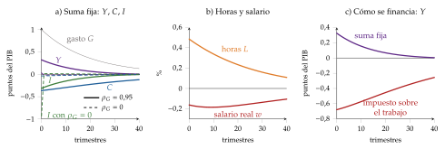
Fuente: Elaboración propia: simulación del modelo log-linealizado con la calibración de la tabla 2. a) Producción, consumo e inversión, en puntos del PIB, con impuestos de suma fija y \(\rho_G=0{,}95\) (continuas) o \(\rho_G=0\) (discontinuas). b) Horas y salario real, en %, con \(\rho_G=0{,}95\). c) Producción con impuestos de suma fija y con un impuesto sobre el trabajo.
c) Extensiones
Impuestos distorsionantes: la equivalencia ricardiana falla y la forma de financiar el gasto importa tanto como el propio gasto.
Un impuesto sobre el trabajo reduce el salario neto, \((1-\tau_{L,t})\,w_t\), y con él las horas. Si el gasto se paga así, el efecto sustitución domina al efecto riqueza y el multiplicador es negativo: \(-0{,}68\) en el impacto en la tabla 2. No es una curiosidad: en 2024 el tipo implícito sobre el trabajo fue del 36,2 % en España y del 37,1 % en la UE.
Un impuesto sobre el capital reduce el rendimiento del ahorro, \((1-\tau_{K,t+1})\,r_{t+1}\), y con él la inversión: es la cuña que, a largo plazo, deja menos capital (II.1).
Los cambios de los tipos impositivos son otra perturbación real que mejora el ajuste del modelo a los datos.
La suavización impositiva: si la distorsión de un impuesto crece con el cuadrado del tipo,10 al Estado le conviene mantener constante el tipo medio, \(T_t/Y_t=\bar\tau\), y dejar que la deuda absorba el gasto transitorio (una guerra, una pandemia) y el ciclo: déficits en las recesiones y superávits en las expansiones, con los estabilizadores automáticos actuando [ver tema 3.A.39]. Es la lógica de Ramsey aplicada al tiempo: Ramsey reparte los impuestos entre bienes para minimizar el exceso de gravamen, con más impuesto donde la base es menos elástica; Barro los reparte entre periodos y, si la base es igual de elástica en todos, con el mismo tipo [ver tema 4.B.11]. El problema, en el anexo E.
Gasto productivo: Baxter y King (1993) distinguen el consumo público, que solo absorbe recursos, de la inversión pública, que forma un capital público \(K^G_t\) que entra en la producción, \(Y_t=A_tK_t^{\alpha}L_t^{1-\alpha}(K^G_t)^{\alpha_G}\), con \(0<\alpha_G<1-\alpha\) (\(K^G_t\) y \(\alpha_G\), locales). Un aumento permanente de la inversión pública tiene 3 efectos:
absorbe recursos, como el consumo público (efecto riqueza negativo);
eleva la producción con los mismos factores privados, tanto más cuanto mayor es \(\alpha_G\);
eleva el producto marginal del trabajo y del capital privados y, con él, el empleo y la inversión privada: el capital público complementa al privado [ver tema 3.A.34].
A corto plazo domina el primero y el consumo cae; a largo plazo, el tercero, y la producción, el consumo y la inversión privada quedan por encima. Si \(\alpha_G=1-\alpha\), los 2 capitales juntos tendrían rendimientos constantes y el crecimiento sería endógeno. Aquí el capital público se acumula; en el modelo de Barro el gasto es un flujo de servicios (III.1).
d) Evidencia empírica
El modelo acierta en el signo de la producción y de las horas, pero no en el del consumo: en los modelos de vectores autorregresivos, el consumo privado sube tras un aumento del gasto, y en el modelo cae.
Ese desajuste es el que intenta cerrar el modelo neokeynesiano con hogares que viven al día (I.3).
e) Valoración
A favor: da a la política fiscal un mecanismo con microfundamentos, el efecto riqueza, y muestra que lo que importa es el gasto y cómo se financia, no el déficit en sí.
En contra: el consumo cae cuando sube el gasto, al revés que en los datos; el multiplicador depende de una elasticidad de la oferta de trabajo mayor que la que estima la microeconomía [ver tema 3.A.25]; y, como el ciclo es eficiente, no hay nada que estabilizar.11
Nexo: ¿y si los precios no se ajustan enseguida? Es el modelo neokeynesiano.
I.3. Modelo neokeynesiano para el análisis de la política fiscal
a) Idea
Una vez visto el gasto con precios flexibles, pasamos a precios rígidos. El modelo neokeynesiano añade al de ciclo real competencia monopolística, para que las empresas fijen precios, y rigidez de precios a la Calvo [ver tema 3.A.7]. A corto plazo la producción la determina la demanda y el banco central fija el tipo de interés.
Es el modelo canónico de 3 ecuaciones ampliado con un Estado que gasta: la política fiscal entra en la IS dinámica, a través del tipo natural, y en la producción natural, a través del efecto riqueza (anexo C).
b) Modelo
i) Supuestos
Los del modelo canónico [ver tema 3.A.7]: un hogar representativo de vida infinita, un continuo de empresas en competencia monopolística que producen solo con trabajo, \(Y_t=A_tL_t\), rigidez de precios a la Calvo y un banco central que fija el tipo de interés nominal. Las ecuaciones se log-linealizan alrededor de un estado estacionario con inflación cero.
Lo que se añade: un Estado que compra bienes, \(G_t\), que no dan utilidad ni producen, y que los financia con impuestos de suma fija y deuda. Sigue sin haber capital: toda la producción es consumo o gasto público, \(Y_t=C_t+G_t\).
En logaritmos, con \(g_t\equiv-\ln(1-G_t/Y_t)\simeq G_t/Y_t\), el peso del gasto en el PIB, la condición de equilibrio es exacta: \(c_t=y_t-g_t\).
El gasto sigue un proceso autorregresivo de persistencia \(\rho_G\), como en el ciclo real (2).
ii) Desarrollo
La IS dinámica con gasto: llevando \(c_t=y_t-g_t\) a la ecuación de Euler del consumo, \(c_t=\mathbb{E}_t[c_{t+1}]-\frac{1}{\theta}\big(i_t-\mathbb{E}_t[\pi_{t+1}]-\rho\big)\), sale
\[y_t=\mathbb{E}_t[y_{t+1}]-\frac{1}{\theta}\big(i_t-\mathbb{E}_t[\pi_{t+1}]-\rho\big)+\big(g_t-\mathbb{E}_t[g_{t+1}]\big)\tag{5}\]
Un gasto que se espera que baje (\(g_t>\mathbb{E}_t[g_{t+1}]\)) eleva la demanda de hoy: es una perturbación de demanda.
En términos de la brecha, \(x_t\equiv y_t-y^n_t\), es la IS dinámica canónica, \(x_t=\mathbb{E}_t[x_{t+1}]-\frac{1}{\theta}\big(i_t-\mathbb{E}_t[\pi_{t+1}]-r^n_t\big)\), con el gasto dentro del tipo natural, \(r^n_t=\rho+\theta\,\mathbb{E}_t[\Delta y^n_{t+1}]-\theta\,\mathbb{E}_t[\Delta g_{t+1}]\): mientras dura, el gasto sube el tipo real que haría falta para que los hogares consumieran lo que queda.
El gasto también sube la producción natural, la que habría con precios flexibles: los hogares, más pobres, trabajan más (el efecto riqueza del ciclo real), \[\tag{6} y^n_t=\psi\,a_t+\Gamma\,g_t-\frac{\mu}{\theta+\varphi},\qquad\Gamma\equiv\frac{\theta}{\theta+\varphi}\in(0,1),\] con \(\psi\equiv(1+\varphi)/(\theta+\varphi)\), \(\mu\) el margen deseado y \(\Gamma\) (local) el multiplicador con precios flexibles.
Las otras 2 ecuaciones no cambian: la curva de Phillips neokeynesiana, \[\tag{7} \pi_t=\beta\,\mathbb{E}_t[\pi_{t+1}]+\kappa\,x_t+u_t,\] porque el gasto mueve el coste marginal de las empresas solo a través de la brecha (sube el salario real cuando la producción supera a la natural), y la regla de Taylor, \[\tag{8} i_t=\rho+\phi_\pi\,\pi_t+\phi_x\,x_t+\varepsilon_t,\] con \(\phi_\pi>1\) [ver tema 3.A.7] [ver tema 3.A.36]. El gasto entra, por tanto, por 2 sitios: el tipo natural, en la IS, y la producción natural, en la brecha.
La solución: con el gasto autorregresivo, la brecha y la inflación son proporcionales al gasto, \(x_t=\psi_x\,g_t\) y \(\pi_t=\psi_\pi\,g_t\) (\(\psi_x\), \(\psi_\pi\) locales), y la producción sube \(\Delta y_t=(\Gamma+\psi_x)\,g_t\): el multiplicador es la suma de lo que sube la producción natural, \(\Gamma\), y de lo que sube la brecha, \(\psi_x\), que depende de la rigidez de precios y del banco central (anexo C).
Como \(c_t=y_t-g_t\), el consumo sube si el multiplicador supera 1 y cae si no llega (gráfico 3).
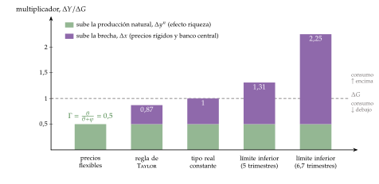
Fuente: Elaboración propia a partir de Woodford (2011) y Christiano, Eichenbaum y Rebelo (2011), con \(\beta=0{,}99\), \(\theta=\varphi=1\), \(\kappa=0{,}02\), \(\phi_\pi=1{,}5\) y \(\rho_G=0{,}8\); en el límite inferior, el gasto dura lo que dura el episodio (5 o 6,7 trimestres de media). Por encima de la línea de trazos, el consumo sube; por debajo, cae.
El modelo canónico y su representación gráfica.
En sentido estricto, el modelo canónico no se puede dibujar en un plano: la IS y la curva de Phillips dependen de las expectativas de la brecha y de la inflación de mañana, que a su vez dependen de toda la senda futura de las perturbaciones y de la política monetaria. No hay una «curva de demanda» y una «curva de oferta» fijas como en el modelo de oferta y demanda agregadas [ver tema 3.A.5].
Las representaciones habituales, como la del plano \((x_t,\pi_t)\) [ver tema 3.A.7] o la del gráfico 3, descansan en estos supuestos:
el modelo está log-linealizado alrededor de un estado estacionario con inflación cero, y solo vale para desviaciones pequeñas;
las perturbaciones (aquí, el gasto) siguen procesos autorregresivos de orden 1, con persistencia conocida;
el equilibrio es único (se cumple el principio de Taylor, \(\phi_\pi>1\)) y se busca por el método de los coeficientes indeterminados: soluciones de la forma \(x_t=\psi_x\,g_t\) y \(\pi_t=\psi_\pi\,g_t\);
por eso las expectativas son proporcionales a los valores de hoy, \(\mathbb{E}_t[x_{t+1}]=\rho_G\,x_t\) y \(\mathbb{E}_t[\pi_{t+1}]=\rho_G\,\pi_t\), o nulas si la perturbación es transitoria (\(\rho_G=0\)).
De dónde sale el plano \((x_t,\pi_t)\): con esos supuestos, sustituyendo las expectativas y la regla de Taylor en la IS se obtiene una relación decreciente entre \(x_t\) y \(\pi_t\), la demanda agregada dinámica, que el gasto desplaza a la derecha; la curva de Phillips con las expectativas sustituidas es la relación creciente. Su corte es la solución del modelo para ese valor de la perturbación, no un equilibrio que se alcance por ajustes sucesivos.
El gráfico 3 no necesita el plano: muestra directamente los multiplicadores que da esa solución en cada caso.
iii) Implicaciones
Un aumento del gasto actúa por 3 vías [ver tema 3.A.7]:
efecto riqueza: los hogares anticipan los impuestos futuros, consumen menos y trabajan más, como en el modelo de ciclo real; es el término \(\Gamma\) de (6);
rigidez de precios: las empresas atienden la mayor demanda con más producción y empleo, y el margen cae: con precios rígidos el margen es contracíclico, y eso amplifica el efecto del gasto;12
respuesta del banco central: si sigue la regla de Taylor, sube el tipo real y expulsa consumo.
El multiplicador depende del banco central (gráfico 3). Como \(Y_t=C_t+G_t\), \(\Delta Y/\Delta G=1+\Delta C/\Delta G\): es menor que 1 si el consumo cae y mayor si sube. El gasto solo expulsa consumo si el banco central sube el tipo real:
con precios flexibles, la brecha no se mueve y el multiplicador es el del ciclo real sin capital, \(\Gamma=\theta/(\theta+\varphi)<1\) (0,5 con \(\theta=\varphi=1\));
con una regla de Taylor, el tipo real sube y el multiplicador queda entre \(\Gamma\) y 1 (0,87 en el ejemplo): más cerca de \(\Gamma\) cuanto más agresiva la regla y más flexibles los precios;
si el banco central mantiene constante el tipo real, el consumo no cambia y el multiplicador es exactamente 1;
en el límite inferior de los tipos, el tipo nominal se queda en su suelo: el gasto sube la inflación esperada y baja el tipo real, y si dura lo que dura ese límite, el multiplicador supera la unidad, tanto más cuanto más largo es el episodio (1,31 si dura 5 trimestres de media, 2,25 si dura 6,7) [ver tema 3.A.40].
Con hogares que viven al día: si una fracción \(\lambda\) de los hogares consume su renta corriente, por restricciones de liquidez o por miopía [ver tema 3.A.33], la equivalencia ricardiana deja de cumplirse y el consumo sube con el gasto, como en los datos; el multiplicador puede superar 1. Campbell y Mankiw estiman \(\lambda\) en torno a 0,5 en Estados Unidos.
La comparación entre el modelo canónico y el ampliado con política fiscal está en la figura 1, y el modelo ampliado, paso a paso, en el anexo C.
El modelo canónico de la NEK frente al ampliado con política fiscal. En la columna de la derecha, en rojo, lo que cambia al introducir el gasto público, los impuestos y la deuda: los supuestos, las ecuaciones y lo que se deduce para la política económica.
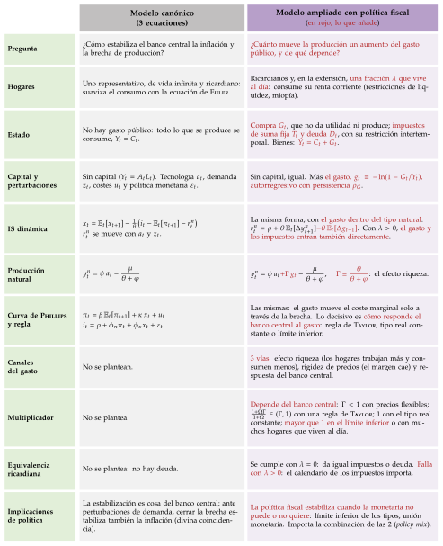
Fuente: Elaboración propia a partir de Galí (2015, cap. 3), Woodford (2011) y Galí, López-Salido y Vallés (2007).
c) Evidencia empírica: el valor del multiplicador
Del gasto: la mayoría de las estimaciones están entre 0,6 y 1. Hall (2009) lo sitúa entre 0,7 y 1 en tiempos normales y en torno a 1,7 con el tipo de interés en cero; en 2012 el FMI reconoció que había supuesto multiplicadores de en torno a 0,5 cuando los de la crisis fueron muy superiores a 1.
De los impuestos: con subidas identificadas en los documentos legislativos, una subida del 1 % del PIB reduce la producción casi un 3 %; con un modelo de vectores autorregresivos estructural, un dólar más de impuestos reduce la producción de Estados Unidos entre 0,78 y 1,33 dólares en el máximo.
Efectos no keynesianos: con una deuda muy alta, una consolidación creíble puede aumentar la actividad, pero la mayoría de las consolidaciones la reducen a corto plazo (I.2) [ver tema 3.A.39].
La teoría y la evidencia del tamaño del multiplicador se desarrollan aparte [ver tema 3.A.40] [ver tema 4.B.4]; sus definiciones y de qué depende, en el anexo F.
d) Valoración
Da a la política fiscal un papel estabilizador mayor que el ciclo real y explica por qué los multiplicadores fueron altos con los tipos en cero. Pero no tiene capital ni crecimiento: no dice nada del largo plazo.
Recapitulación del bloque: a corto plazo el gasto mueve la producción, poco si los precios son flexibles y más si son rígidos y el banco central acomoda. En todos los modelos el gasto se paga, y cómo se paga cambia el ahorro y el capital: ese es el efecto que dura. Pasamos al largo plazo.
II. Efectos de la política fiscal a largo plazo sobre el ahorro
Una vez visto el corto plazo, pasamos al largo, en el que la producción la decide la oferta y el ahorro decide cuánto capital tiene la economía.
Conclusión anticipada: con hogares de vida infinita, la deuda no cambia el ahorro nacional, pero un impuesto sobre las rentas del capital sí, y por eso a largo plazo conviene no gravarlas; con generaciones que se solapan, las pensiones de reparto y la deuda reducen el ahorro y el capital, lo que solo es bueno si la economía acumula de más.
II.1. La política fiscal con un agente representativo de horizonte infinito
a) Idea
El ciclo real ya tenía hogares de vida infinita. Si le quitamos las perturbaciones y fijamos el trabajo, queda el modelo de Ramsey, Cass y Koopmans, el marco de referencia para ver qué hace la política fiscal con el ahorro y el capital a largo plazo [ver tema 3.A.43].
La pregunta: ¿qué hacen el gasto, la deuda y los impuestos con el capital de estado estacionario cuando los hogares miran al futuro sin límite?
b) Modelo
i) Supuestos
Los del modelo de crecimiento con ahorro óptimo [ver tema 3.A.43]:
Economía: cerrada, con un solo bien, que se consume o se invierte, en tiempo continuo y sin incertidumbre.
Producción: \(Y_t=F(K_t,A_tL_t)\), neoclásica, con rendimientos constantes a escala y las condiciones de Inada; por unidad de trabajo eficiente, \(\tilde y_t=f(\tilde k_t)\), con \(\tilde k_t\equiv K_t/(A_tL_t)\).
Crecimiento exógeno: la población crece a la tasa \(n\) y el progreso técnico, que aumenta la eficiencia del trabajo, a la tasa \(g\); el capital se deprecia a la tasa \(\delta\).
Mercados: competencia perfecta; las empresas alquilan el capital y el trabajo cada instante y les pagan su producto marginal, \(r_t=f'(\tilde k_t)-\delta\) y \(w_t=A_t\big[f(\tilde k_t)-\tilde k_tf'(\tilde k_t)\big]\).
Hogares: idénticos y de vida infinita (una dinastía unida por el altruismo), con utilidad CRRA, \((c^{1-\theta}-1)/(1-\theta)\), y tasa de preferencia temporal \(\rho\); cada miembro ofrece una unidad de trabajo de forma inelástica.
Notación: \(\tilde k\), \(\tilde c\) e \(\tilde y\) son el capital, el consumo y la producción por unidad de trabajo eficiente; \(k\), \(c\) e \(y\), per cápita.
Un Estado que compra \(G_t\), que no da utilidad ni produce (\(\tilde G_t\equiv G_t/(A_tL_t)\), por unidad de trabajo eficiente), y lo financia con impuestos de suma fija, con deuda o con un impuesto de tipo \(\tau_K\) sobre las rentas del capital.
De dónde sale la base del apartado. El modelo de Ramsey, Cass y Koopmans es el de ciclo real del apartado I.2 visto a largo plazo (figura 2).
Paso 1, sin perturbaciones: la tecnología y la población crecen a tasas constantes, \(A_t=A_0e^{gt}\) y \(L_t=L_0e^{nt}\), y no hay sorpresas: previsión perfecta.
Paso 2, trabajo inelástico: el ocio no da utilidad (\(\chi=0\)) y cada persona ofrece 1 unidad de trabajo; la oferta de trabajo desaparece del problema.
Paso 3, el problema del hogar: maximiza \(\int_0^{\infty}e^{-(\rho-n)t}u(c_t)\,dt\) con la restricción \(\dot b_t=w_t+(r_t-n)\,b_t-c_t-T_t/L_t\) (\(b_t\), sus activos per cápita, local, y \(T_t/L_t\), los impuestos de suma fija per cápita) y la condición de no juego de Ponzi.
Con el hamiltoniano en valor corriente, \(\mathcal H_t=u(c_t)+\lambda_t\big[w_t+(r_t-n)\,b_t-c_t-T_t/L_t\big]\), las condiciones de primer orden son \(c_t^{-\theta}=\lambda_t\) y \(\dot\lambda_t/\lambda_t=\rho-r_t\).
Juntas dan la ecuación de Euler, \(\dot c_t/c_t=(r_t-\rho)/\theta\); con \(c_t=A_t\tilde c_t\) y \(r_t=f'(\tilde k_t)-\delta\), la de la figura. Los impuestos de suma fija no la cambian: no tocan el rendimiento del ahorro.
Paso 4, el equilibrio: los activos son capital y deuda pública; sumando la restricción del hogar y la del Estado, la deuda y los impuestos se cancelan y queda la acumulación, \(\dot{\tilde k}_t=f(\tilde k_t)-\tilde c_t-\tilde G_t-(n+g+\delta)\,\tilde k_t\).
Con \(\tilde G_t=0\) y \(\tau_K=0\) es el modelo base [ver tema 3.A.43]; el gasto mueve el lugar \(\dot{\tilde k}=0\) y el impuesto sobre el capital, el lugar \(\dot{\tilde c}=0\). Es lo que hace el desarrollo.
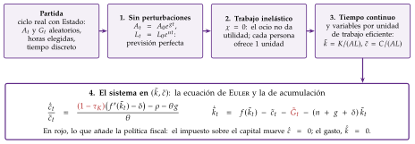
Fuente: Elaboración propia a partir de D. Romer (2019, cap. 2) y Barro y Sala-i-Martin (2004, cap. 2).
ii) Desarrollo
Gasto financiado con impuestos de suma fija: la ecuación de Euler no cambia y el gasto se resta de la acumulación, \(\dot{\tilde k}_t=f(\tilde k_t)-\tilde c_t-{\color{red}{\tilde G_t}}-(n+g+\delta)\,\tilde k_t\) (gráfico 4, el mismo que en otro tema [ver tema 3.A.43]).
Un aumento permanente e inesperado baja el lugar \(\dot{\tilde k}=0\) en su cuantía: el consumo cae lo mismo en el momento del anuncio, y el capital y el tipo de interés no cambian. Es la expulsión completa del consumo privado, el caso límite del ciclo real con trabajo inelástico (I.2).
Un aumento temporal: el consumo cae menos que el gasto, porque el hogar reparte el coste en el tiempo; mientras dura, el capital baja y el tipo de interés sube.
Deuda frente a impuestos: el ahorro nacional. El ahorro nacional es la suma del privado y el público, \(S^N_t=S^P_t+S^G_t\), con \(S^G_t\) los ingresos menos el gasto corriente del Estado:
con horizonte infinito, si el Estado baja hoy los impuestos y se endeuda, el hogar ahorra toda la rebaja para pagar los impuestos de mañana: el ahorro privado sube lo que baja el público y el ahorro nacional no cambia, ni el capital ni el tipo de interés (la equivalencia ricardiana de I.2) [ver tema 3.A.39];
en los datos la compensación es solo parcial: en España, el ahorro de las Administraciones Públicas fue negativo de 2009 a 2024, y el de los hogares solo subió con fuerza en 2020, cuando no se podía gastar (gráfico 5); en 2025 los hogares ahorraron el 11,9 % de su renta disponible, frente al 14,8 % en la zona del euro;
con vidas finitas la equivalencia falla, y es lo que estudia el modelo de generaciones solapadas (II.2).
Impuesto sobre las rentas del capital: un tipo \(\tau_K\) reduce el rendimiento del ahorro y entra en la ecuación de Euler,
\[\frac{\dot{\tilde c}_t}{\tilde c_t}=\frac{{\color{red}{(1-\tau_K)}}\big(f'(\tilde k_t)-\delta\big)-\rho-\theta g}{\theta}\quad\Longrightarrow\quad f'(\tilde k^*)=\delta+\frac{\rho+\theta g}{{\color{red}{1-\tau_K}}}\tag{9}\]
El lugar \(\dot{\tilde c}=0\) se desplaza a la izquierda: el nuevo estado estacionario tiene menos capital, menos renta y menos consumo. En el momento de la subida, el consumo salta hacia arriba y después la economía desacumula capital (gráfico 6, el mismo que en otro tema [ver tema 3.A.43]).
Otros impuestos: uno proporcional y constante sobre el consumo no cambia el precio relativo del consumo de hoy y de mañana; con el trabajo inelástico, tampoco el impuesto sobre el trabajo. Los 2 actúan como uno de suma fija.

Fuente: Elaboración propia a partir de D. Romer (2019, cap. 2, figs. 2.8 y 2.9) y Barro y Sala-i-Martin (2004, fig. 3.2).
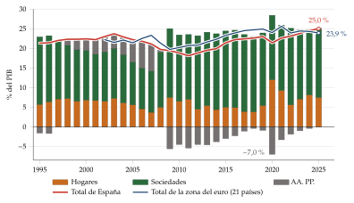
Fuente: Eurostat, cuentas de los sectores institucionales (Eurostat, 2026e) y PIB (Eurostat, 2026a); elaboración propia. Zona del euro de 21 países, desde 2002.
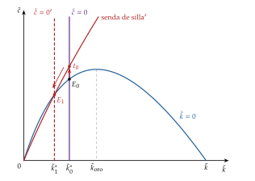
Fuente: Elaboración propia a partir de Acemoglu (2009, cap. 8, fig. 8.2) y Barro y Sala-i-Martin (2004, fig. 3.1).
iii) Implicaciones: el resultado de Chamley y Judd
Judd (1985) y Chamley (1986): si el Estado puede comprometerse y la economía converge a un estado estacionario, el impuesto óptimo sobre las rentas del capital a largo plazo es nulo, aunque el Estado quiera redistribuir hacia los trabajadores (Judd) y tenga que financiar su gasto con impuestos distorsionantes (Chamley).
El capital es la gallina de los huevos de oro: gravar lo que rinde reduce la puesta de todos los años futuros, y matarla para comer hoy deja sin huevos el futuro.
Intuición:
un impuesto constante sobre las rentas del capital es un impuesto sobre el consumo futuro que crece con la distancia: un euro ahorrado hoy da \((1+r)^T\) euros dentro de \(T\) periodos sin impuesto y \([1+(1-\tau_K)\,r]^T\) con él, y la cuña crece sin límite con \(T\). La regla de Ramsey pide no gravar mucho más unos bienes que otros parecidos, y el consumo de 2040 y el de 2041 lo son [ver tema 4.B.11];
en el estado estacionario, la oferta de capital es infinitamente elástica al rendimiento neto: por (9), \((1-\tau_K)\big(f'(\tilde k^*)-\delta\big)=\rho+\theta g\) no depende del impuesto. Todo el impuesto acaba recayendo en el trabajo, a través de un salario menor, y es mejor gravar el trabajo directamente.
Implicación: conviene gravar el capital ya instalado, que no puede escapar, y comprometerse a no gravar el futuro. De ahí la inconsistencia temporal: una vez acumulado el capital, la tentación es gravarlo [ver tema 3.A.36].
c) Extensiones
Straub y Werning (2020) muestran que el resultado no se sigue de los propios modelos que lo dieron: en el de Judd, si la elasticidad de sustitución intertemporal es menor que 1, el impuesto óptimo a largo plazo es positivo y alto; en el de Chamley, los límites al impuesto pueden estar activos para siempre, y la convergencia puede tardar décadas.
Con mercados incompletos y riesgos individuales sin asegurar, o con vidas finitas, el impuesto óptimo sobre el capital es positivo: en torno al 36 % en el modelo de ciclo vital calibrado para Estados Unidos de Conesa, Kitao y Krueger (2009).
d) Evidencia empírica
Los Estados no siguen el resultado: en 2024 el tipo implícito sobre el capital fue del 29,5 % en España y del 32,5 % en la UE, no muy lejos del que soporta el trabajo.
e) Valoración
Con crecimiento exógeno, la política fiscal cambia el nivel del capital y de la renta, nunca su tasa de crecimiento a largo plazo, que sigue siendo \(g\) (la tasa, en el bloque III).
Y con hogares de vida infinita la deuda es neutral. Para ver lo que hacen la deuda y las pensiones con el ahorro hacen falta generaciones que se solapen.
II.2. Efectos de los sistemas públicos de pensiones sobre el ahorro
a) Idea
Con hogares de vida infinita no hay transferencias entre generaciones que estudiar, y las pensiones públicas son la mayor de ellas: en España, el 13,1 % del PIB en 2022.13
Hay 2 formas de organizarlas:
de capitalización: lo que cotiza cada trabajador se invierte y se le devuelve, con sus rendimientos, al jubilarse;
de reparto: las cotizaciones de los que trabajan pagan las pensiones de los jubilados de ese momento; es el sistema de España y de la mayoría de los países europeos [ver tema 4.B.24].
El reparto descansa en una promesa entre generaciones, la del refrán «hijo eres, padre serás; cual hiciste, tal habrás»: lo que hoy se paga a la generación de los padres lo pagará mañana la de los hijos.
La pregunta: ¿cómo cambia cada sistema el ahorro y el capital, y cuál es mejor? El marco es el modelo de generaciones solapadas de Diamond (1965)14, con producción y acumulación de capital [ver tema 3.A.29].
b) Modelo
i) Supuestos
Hogares: viven 2 periodos (figura 3). De jóvenes ofrecen una unidad de trabajo, de forma inelástica, cobran el salario real \(w_t\), cotizan un tipo \(\tau\) sobre él, consumen \(C^J_t\) y ahorran \(S_t\); de viejos consumen \(C^V_{t+1}\), su ahorro con sus rendimientos más la pensión \(Z_{t+1}\) (\(Z_{t+1}\), local). Su número crece a la tasa \(n\) y su utilidad es \(\ln C^J_t+\beta\ln C^V_{t+1}\).
Empresas: competitivas, con \(Y_t=K_t^{\alpha}(A_tL_t)^{1-\alpha}\), \(A_{t+1}=(1+g)A_t\) y depreciación completa en un periodo de unos 30 años [ver tema 3.A.29]: con \(\tilde k_t\equiv K_t/(A_tL_t)\), el capital por unidad de trabajo eficiente, \(1+r_t=\alpha\tilde k_t^{\alpha-1}\) y \(w_t=A_t(1-\alpha)\tilde k_t^{\alpha}\).
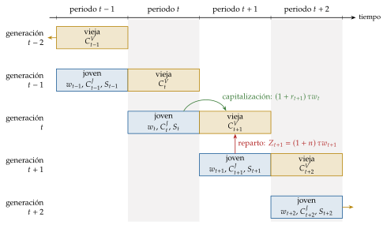
Fuente: Elaboración propia.
ii) Desarrollo
El modelo base, sin pensiones. El joven de \(t\) resuelve \[\begin{array}{rl}\displaystyle \max_{C^J_t,\,C^V_{t+1}} & \displaystyle \ln C^J_t+\beta\ln C^V_{t+1} \\ \text{s.a.} & C^J_t+S_t=w_t \\ & C^V_{t+1}=(1+r_{t+1})\,S_t\end{array}\]
Paso 1, la ecuación de Euler: \(C^V_{t+1}=\beta\,(1+r_{t+1})\,C^J_t\); consumir un euro menos de joven da \(1+r_{t+1}\) euros de viejo, que el hogar descuenta con \(\beta\).
Paso 2, la restricción de toda la vida: \(C^J_t+C^V_{t+1}/(1+r_{t+1})=w_t\); el valor actual del consumo iguala la renta de toda la vida, el salario.
Paso 3, la solución: \(C^J_t=w_t/(1+\beta)\) y \[\tag{10} S_t=\frac{\beta}{1+\beta}\,w_t;\] con utilidad logarítmica, el ahorro no depende del tipo de interés, porque los efectos renta y sustitución se compensan.
Paso 4, el capital: el capital de mañana es el ahorro de los jóvenes de hoy, \(K_{t+1}=L_tS_t\). Dividiendo por \(A_{t+1}L_{t+1}\) y con \(w_t=A_t(1-\alpha)\tilde k_t^{\alpha}\), la ley de movimiento de Diamond [ver tema 3.A.29]: \[\tag{11} \tilde k_{t+1}=\frac{\beta\,(1-\alpha)}{(1+\beta)(1+n)(1+g)}\,\tilde k_t^{\alpha}.\]
Con capitalización (en rojo, lo que se añade al modelo base): el joven cotiza \(\tau w_t\), el sistema lo invierte en capital y se lo devuelve de viejo con sus rendimientos, \[\begin{array}{rl}\displaystyle \max_{C^J_t,\,C^V_{t+1}} & \displaystyle \ln C^J_t+\beta\ln C^V_{t+1} \\ \text{s.a.} & C^J_t+S_t={\color{red}{(1-\tau)}}\,w_t \\ & C^V_{t+1}=(1+r_{t+1})\,S_t+{\color{red}{(1+r_{t+1})\,\tau w_t}}\end{array}\]
La restricción de toda la vida no cambia: \(C^J_t+C^V_{t+1}/(1+r_{t+1})=w_t{\color{red}{-\tau w_t+\tau w_t}}=w_t\). La cotización rinde lo mismo que el ahorro privado, así que la riqueza del hogar es la misma.
La solución: el consumo de las 2 edades no cambia y el hogar ahorra menos justo lo que cotiza, \[\tag{12} S_t=\frac{\beta}{1+\beta}\,w_t{\color{red}{-\tau w_t}}\qquad\Longleftrightarrow\qquad S_t{\color{red}{+\tau w_t}}=\frac{\beta}{1+\beta}\,w_t.\]
El capital: es el ahorro privado más el del sistema, \(K_{t+1}=L_t\,(S_t{\color{red}{+\tau w_t}})\), y la ley de movimiento es (11). El ahorro total y el capital no cambian: el ahorro obligatorio sustituye uno a uno al voluntario, mientras la cotización no supere lo que el hogar ahorraría (\(\tau\le\beta/(1+\beta)\)).
Con reparto (en rojo, lo que se añade al modelo base): la cotización de los jóvenes paga las pensiones de los viejos del mismo periodo. Por cada viejo hay \(1+n\) jóvenes, así que el presupuesto del sistema da \(Z_{t+1}=(1+n)\,\tau w_{t+1}\) (anexo G), y el hogar resuelve \[\begin{array}{rl}\displaystyle \max_{C^J_t,\,C^V_{t+1}} & \displaystyle \ln C^J_t+\beta\ln C^V_{t+1} \\ \text{s.a.} & C^J_t+S_t={\color{red}{(1-\tau)}}\,w_t \\ & C^V_{t+1}=(1+r_{t+1})\,S_t+{\color{red}{(1+n)\,\tau\,w_{t+1}}}\end{array}\]
La restricción de toda la vida cambia: \(C^J_t+\dfrac{C^V_{t+1}}{1+r_{t+1}}=w_t{\color{red}{-\tau w_t+\dfrac{(1+n)\,\tau\,w_{t+1}}{1+r_{t+1}}}}\). La cotización rinde la tasa de crecimiento de la masa salarial, no el tipo de interés.
La solución: de la ecuación de Euler, que no cambia, \(C^J_t\) es la riqueza de toda la vida entre \(1+\beta\), y el ahorro es lo que queda de la renta neta,
\[S_t=\frac{\beta}{1+\beta}\,{\color{red}{(1-\tau)}}\,w_t{\color{red}{-\frac{1}{1+\beta}\,\frac{(1+n)\,\tau\,w_{t+1}}{1+r_{t+1}}}}\tag{13}\]
El ahorro privado cae por 2 vías: la cotización reduce la renta de hoy y la pensión aumenta la de mañana. Y nadie ahorra por los jóvenes: su cotización no se invierte, se paga a los viejos.
El capital: es solo el ahorro privado, \(K_{t+1}=L_tS_t\). Sustituyendo \(w_t\), \(w_{t+1}\) y \(1+r_{t+1}=\alpha\tilde k_{t+1}^{\alpha-1}\) y despejando \(\tilde k_{t+1}\), que aparece a los 2 lados (anexo G): \[\tag{14} \tilde k_{t+1}=\frac{\beta\,(1-\alpha)\,{\color{red}{(1-\tau)}}}{(1+n)(1+g)\left[1+\beta{\color{red}{+\tau\,(1-\alpha)/\alpha}}\right]}\,\tilde k_t^{\alpha}.\] Con \(\tau=0\) es (11). El coeficiente baja con \(\tau\): la ley de movimiento se desplaza hacia abajo y el capital de estado estacionario es menor que sin pensiones o con capitalización (gráfico 7, construido sobre el de otro tema [ver tema 3.A.29]).
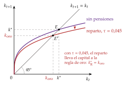
Fuente: Elaboración propia a partir de D. Romer (2019, cap. 2) y Diamond (1965). Parámetros ilustrativos: \(\alpha=0{,}3\), \(\beta=0{,}9\) y, con reparto, \(\tau=0{,}045\), la cotización que lleva el capital justo a la regla de oro.
| Sin pensiones | Capitalización | Reparto | |
|---|---|---|---|
| Renta del joven | \(w_t\) | \({\color{red}{(1-\tau)}}\,w_t\) | \({\color{red}{(1-\tau)}}\,w_t\) |
| Pensión | \(0\) | \({\color{red}{(1+r_{t+1})\,\tau w_t}}\) | \({\color{red}{(1+n)\,\tau w_{t+1}}}\) |
| Rendimiento de la cotización | — | \(1+r\) | \((1+n)(1+g)\) |
| Ahorro privado, \(S_t\) | \(\frac{\beta}{1+\beta}w_t\) | \(\frac{\beta}{1+\beta}w_t{\color{red}{-\tau w_t}}\) | (13): menor |
| Capital, \(\tilde k^*\) | (11) | igual | menor (14) |
Fuente: Elaboración propia a partir de Diamond (1965), Aaron (1966) y D. Romer (2019, cap. 2). En rojo, lo que añade cada sistema al modelo base; los rendimientos, en el estado estacionario.
iii) Implicaciones
Rendimientos: la capitalización rinde \(1+r\); el reparto, \((1+n)(1+g)\) en el estado estacionario, porque la pensión crece con el número de cotizantes y con sus salarios.
La condición de Aaron: el reparto rinde más que la capitalización si \[\tag{15} n+g>r,\] que es justo la condición de ineficiencia dinámica: la economía tiene tanto capital que el tipo de interés queda por debajo del crecimiento, \(r^*<(1+n)(1+g)-1\simeq n+g\) [ver tema 3.A.29]. Ahorrar de más empeora a todos. Entonces introducir el reparto reduce el capital hacia la regla de oro y mejora a todas las generaciones; con los parámetros del gráfico 7, una cotización del 4,5 % basta para llegar a ella.
¿Cómo puede haber ineficiencia sin fallos de mercado? Por la «doble infinitud» de Shell (1971): infinitos periodos y agentes hacen que el valor de las dotaciones a los precios de equilibrio pueda ser infinito, y el primer teorema fundamental de la economía del bienestar necesita que no lo sea [ver tema 3.A.22]. Y porque cada generación solo puede ahorrar para la vejez acumulando capital, aunque rinda poco: no puede prestar a quien aún no ha nacido.15
Si la economía es eficiente (\(r>n+g\)), el reparto es un mal negocio para las generaciones futuras: la primera generación de viejos cobra sin haber cotizado y las siguientes reciben menos de lo que rendiría su cotización. Volver a la capitalización exige que una generación pague 2 veces: la pensión de sus padres y su propio ahorro.
La deuda hace lo mismo: los jóvenes ahorran comprando capital o deuda pública, así que el capital de mañana es su ahorro menos la deuda que compran, \(K_{t+1}=L_tS_t-D_t\): la deuda desplaza capital y traslada la carga a quienes aún no han nacido [ver tema 3.A.29]. La equivalencia ricardiana solo se recupera si cada generación deja herencias a la siguiente por altruismo.
c) Extensiones
Jubilación endógena: si las pensiones adelantan la jubilación, hay que financiar un retiro más largo y el ahorro puede subir; el efecto total de las pensiones sobre el ahorro es ambiguo.
Modelos con muchas generaciones: los que se usan para evaluar reformas tienen decenas de generaciones, oferta de trabajo y el detalle de la relación entre lo cotizado y la pensión.
El empujón al ahorro voluntario: si los hogares ahorran menos de lo que querrían para la jubilación, por miopía o por inercia, el Estado puede cambiar la opción por defecto sin obligar a nadie: es el paternalismo libertario de Thaler y Sunstein (2008)16 [ver tema 3.A.1].
El Reino Unido afilia por defecto a los trabajadores a un plan de pensiones de empresa, con libertad para salirse, desde octubre de 2012, empezando por las grandes empresas.
Funciona porque la mayoría de los hogares es pasiva: en Dinamarca, cada corona de subvención fiscal al ahorro para la jubilación crea solo un céntimo de ahorro nuevo, mientras que las aportaciones automáticas lo elevan mucho.
d) Evidencia empírica
Feldstein (1974) estimó que la «riqueza de la Seguridad Social» había reducido mucho el ahorro personal de Estados Unidos; Leimer y Lesnoy (1982) encontraron un error de programación en la construcción de esa variable y, corregido, un efecto mucho menor y poco robusto.
Entre países, los que tienen sistemas de reparto ahorran menos, tanto más cuanto mayor es su cobertura; pero los que pasaron a sistemas de aportación definida no muestran después un ahorro mayor.
¿Hay ineficiencia dinámica? En las grandes economías avanzadas, los beneficios del capital superan año tras año a la inversión, señal de que no acumulan de más: el reparto no es una mejora de Pareto, sino una transferencia hacia las primeras generaciones [ver tema 3.A.29].
El envejecimiento baja \(n\) y, con él, el rendimiento del reparto. En España, la población de 65 años o más pasaría del 33,3 % de la de 20 a 64 años en 2022 al 64,5 % en 2054, y el gasto público en pensiones, del 13,1 % del PIB en 2022 a un máximo del 17,3 % hacia 2050 y al 16,7 % en 2070; en la UE, del 11,4 % hasta un máximo del 12,2 % hacia 2035-2044 y al 11,8 % en 2070 (gráfico 8, el mismo que en otro tema [ver tema 3.A.29]).

e) Valoración
El modelo explica por qué el reparto reduce el ahorro y el capital y cuándo eso es bueno, pero deja fuera el riesgo (la capitalización expone la pensión a los mercados; el reparto, a la demografía y a la política), la jubilación endógena y la redistribución dentro de cada generación, que es la razón de ser de muchos sistemas públicos.
Las reformas reales combinan los 2 sistemas: cuentas nocionales, como en Suecia, fondos de reserva y cotizaciones finalistas, como el mecanismo de equidad intergeneracional español [ver tema 4.B.24].
Recapitulación del bloque: con horizonte infinito, el déficit no cambia el ahorro nacional y solo el impuesto sobre el rendimiento del ahorro lo reduce; con generaciones solapadas, la deuda y el reparto reducen el ahorro y el capital: malo si la economía es eficiente, como parecen serlo las avanzadas, y bueno si acumula de más. En todos los casos, la política fiscal cambia el nivel del capital. ¿Puede cambiar también su tasa de crecimiento?
III. Efectos de la política fiscal a largo plazo sobre el crecimiento económico
Pasamos del nivel a la tasa. Con rendimientos decrecientes del capital, la política fiscal solo cambia el nivel de la renta; si el capital no los tiene, también la tasa de crecimiento.
Conclusión anticipada: con gasto productivo, el tamaño del Estado tiene un óptimo, \(G/Y=1-\alpha\), y los impuestos que gravan la acumulación reducen la tasa de crecimiento, no solo su nivel. Lo que más importa es la composición: qué gasto y qué impuestos.
III.1. La política fiscal y el crecimiento endógeno (Barro, 1990)
a) Idea
La pregunta: ¿puede el gasto público generar crecimiento sostenido, y qué tamaño del Estado lo maximiza? El Estado tiene 2 caras:
suministra bienes productivos (infraestructuras, justicia, seguridad, investigación17) que hacen más productivo el capital privado;
pero tiene que financiarlos con impuestos, que reducen el rendimiento de invertir.
Si el gasto no fuera productivo, solo quedaría la segunda cara y su tamaño óptimo sería nulo.
Con el Estado pasa como en el «ni contigo ni sin ti»: sin gasto productivo no se crece y, con demasiado, los impuestos que lo pagan ahogan la inversión.
b) Modelo
i) Supuestos
Producción: con capital privado y un flujo de bienes y servicios que suministra el Estado, \(G_t\) (infraestructuras, justicia, seguridad), que todas las empresas usan a la vez y toman como dado, con rendimientos constantes en los 2 y decrecientes en cada uno: \[\tag{16} Y_t=A\,K_t^{\alpha}\,G_t^{1-\alpha},\qquad 0<\alpha<1.\] Por trabajador, con el gasto público por trabajador, \(G_t/L_t\) (sin letra propia, para no confundirlo con el progreso técnico), \(y_t=A\,k_t^{\alpha}\,(G_t/L_t)^{1-\alpha}\). Aquí \(G_t\) es un flujo de gasto, no el capital público acumulado de Baxter y King (I.2).
Sector público: financia el gasto con un impuesto proporcional sobre la renta (o, lo que es lo mismo, sobre la producción), de tipo \(\tau\) constante. La parte de la renta que no es disponible, \(\tau Y_t\), es la recaudación, y la renta disponible por trabajador es \((1-\tau)\,y_t\).
Presupuesto equilibrado: \(G_t=\tau Y_t\). Los gobiernos pueden endeudarse, pero a largo plazo lo que se pide prestado hay que devolverlo y los gastos tienden a igualar a los ingresos [ver tema 3.A.39]; como interesa el largo plazo, el déficit se deja fuera.
Ahorro: como en el modelo de Solow18, los hogares ahorran (e invierten) una fracción constante, \(s\), de su renta disponible; la población crece a \(n\) y el capital se deprecia a \(\delta\). Con hogares de Ramsey, como en II.1, los resultados son los mismos (al final del desarrollo).
ii) Desarrollo
Acumulación: el capital por trabajador aumenta con el ahorro y disminuye con la depreciación y la dilución, \[\dot k_t=s\,(1-\tau)\,y_t-(n+\delta)\,k_t=s\,(1-\tau)\,A\,k_t^{\alpha}\left(\frac{G_t}{L_t}\right)^{1-\alpha}-(n+\delta)\,k_t,\] y, dividiendo por \(k_t\), \[\gamma_k=s\,(1-\tau)\,A\left(\frac{G_t/L_t}{k_t}\right)^{1-\alpha}-(n+\delta).\] La tasa de crecimiento sube con el gasto público y baja con el tipo impositivo; pero los 2 no son independientes, porque para gastar el Estado tiene que recaudar.
Restricción del Estado: dividiendo \(G=\tau Y\) por \(L\) y sustituyendo la función de producción, \[\frac{G_t}{L_t}=\tau A\,k_t^{\alpha}\left(\frac{G_t}{L_t}\right)^{1-\alpha}\ \Longrightarrow\ \left(\frac{G_t}{L_t}\right)^{\alpha}=\tau A\,k_t^{\alpha}\ \Longrightarrow\ \frac{G_t}{L_t}=(\tau A)^{1/\alpha}\,k_t.\] El gasto por trabajador es proporcional al capital por trabajador.
Es un \(AK\): sustituyendo en la función de producción, \(y_t=A^{1/\alpha}\,\tau^{(1-\alpha)/\alpha}\,k_t\equiv\bar A\,k_t\), con \(\bar A\) constante (\(\bar A\), local). Una vez incorporada la restricción del Estado, la producción es lineal en el capital, y todas las tasas son iguales y constantes desde el principio, sin transición, como en el modelo \(AK\) [ver tema 3.A.44]: \[\tag{17} \gamma_c=\gamma_y=\gamma_k=\gamma_{G/L}=s\,(1-\tau)\,A^{1/\alpha}\,\tau^{(1-\alpha)/\alpha}-(n+\delta).\] Las variables agregadas crecen a esa tasa más \(n\).
2 efectos del impuesto sobre el crecimiento:
negativo, a través de \((1-\tau)\): el impuesto reduce la renta disponible y, con ella, el ahorro y la inversión;
positivo, a través de \(\tau^{(1-\alpha)/\alpha}\): un tipo mayor permite más gasto público productivo, que hace más productivo el capital privado y aumenta la producción con que se ahorra.
El tipo que maximiza el crecimiento: con tipos bajos domina el efecto positivo; al subir el tipo, lo compensa cada vez más el negativo. Derivando \((1-\tau)\,\tau^{(1-\alpha)/\alpha}\) respecto a \(\tau\): \[\frac{d}{d\tau}\left[(1-\tau)\,\tau^{\frac{1-\alpha}{\alpha}}\right]=\tau^{\frac{1-\alpha}{\alpha}-1}\left[\frac{1-\alpha}{\alpha}(1-\tau)-\tau\right]=0\quad\Longrightarrow\]
\[\tau^*=\frac{G}{Y}=1-\alpha\tag{18}\]
El corchete es positivo para \(\tau<1-\alpha\) y negativo para \(\tau>1-\alpha\): es un máximo.
El crecimiento sube con el tipo mientras \(\tau<1-\alpha\) y baja después: tiene forma de U invertida (gráfico 9, el mismo que en otro tema [ver tema 3.A.44]). Con \(\tau=0\) no hay gasto público y el capital no produce; con \(\tau=1\) no queda renta para ahorrar: en los 2 extremos, el capital por trabajador cae a la tasa \(n+\delta\).
El tipo óptimo coincide con la elasticidad de la producción al gasto público. En \(\tau^*\) se cumple la regla de Barro: \(\partial Y/\partial G=(1-\alpha)Y/G=1\), el gasto productivo se lleva hasta que su producto marginal iguala su coste.19

Los 2 efectos en el gráfico (gráfico 10): a la izquierda de \(\tau^*\) domina el efecto positivo del gasto, y subir el tipo acelera el crecimiento; a la derecha domina el efecto negativo del impuesto, y subirlo lo frena.
Con hogares de Ramsey se obtienen los mismos resultados. Con la población normalizada a 1, el hogar recibe por su capital el producto marginal privado tras impuestos, \(r=(1-\tau)\,\alpha\,A^{1/\alpha}\tau^{(1-\alpha)/\alpha}-\delta\), constante, y con la ecuación de Euler, \(\gamma=(r-\rho)/\theta\): \[\tag{19} \gamma=\frac{1}{\theta}\left[(1-\tau)\,\alpha\,A^{1/\alpha}\,\tau^{(1-\alpha)/\alpha}-\delta-\rho\right].\] El tipo entra de la misma forma, \((1-\tau)\,\tau^{(1-\alpha)/\alpha}\), y el que maximiza el crecimiento vuelve a ser \(\tau^*=1-\alpha\) (anexo H).
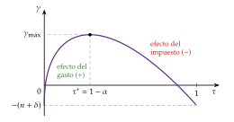
iii) Implicaciones
El tamaño del Estado afecta al crecimiento a largo plazo: hay un tamaño óptimo del gasto productivo, \(G/Y=1-\alpha\). Por debajo, más gasto acelera el crecimiento; por encima, lo frena.
La composición del gasto importa: el gasto improductivo solo tiene el efecto negativo de su financiación, y su tamaño óptimo sería nulo; y no todos los impuestos frenan igual el crecimiento: uno que no grave el rendimiento de invertir no lo frena.
El equilibrio no es óptimo: el hogar recibe por su capital solo la fracción \(\alpha\) de lo que rinde a la sociedad. El planificador, que elige \(G/Y=1-\alpha\) y no grava el margen de la inversión, crecería más; con un impuesto de suma fija que financiara el mismo gasto, el equilibrio alcanzaría el óptimo (anexo H).
Matices: el gasto productivo rinde más si va acompañado de reformas de oferta que permitan aprovecharlo (invertir en educación rinde menos con un mercado de trabajo muy rígido), y, en un modelo de equilibrio general, sus efectos sobre la producción son mayores a largo plazo que a corto (I.2).
c) Extensiones
Congestión: si los servicios públicos se congestionan, lo que importa es el gasto en relación con el tamaño de la economía, y un impuesto proporcional actúa como un precio por su uso.
Capital público acumulable: si el gasto productivo forma un capital, como en Baxter y King (1993), hay dinámica de transición, y el crecimiento endógeno exige que el capital privado y el público tengan juntos rendimientos constantes.
d) Valoración
A favor: da una base al tamaño óptimo del sector público productivo y muestra que la composición del gasto y la forma de financiarlo importan para el crecimiento.
En contra: hereda el filo de la navaja del \(AK\) (rendimientos exactamente constantes en \(K\) y \(G\) a la vez); trata todo el gasto como un flujo productivo homogéneo, sin deuda; y su regla depende de una elasticidad difícil de medir.
Nexo: no todos los impuestos son iguales. ¿Cuáles frenan más el crecimiento, y qué dicen los datos?
III.2. La estructura impositiva y el crecimiento
La teoría: con una tecnología \(AK\) [ver tema 3.A.44], un impuesto \(\tau_K\) sobre las rentas del capital (en el \(AK\) toda la renta lo es) reduce el rendimiento neto de acumular y, con él, la tasa de crecimiento, para siempre: \[\tag{20} \gamma=\frac{(1-\tau_K)\,A-\delta-\rho}{\theta}.\] En el modelo de Ramsey, Cass y Koopmans el mismo impuesto solo bajaba el nivel del capital (II.1); aquí baja la tasa. Por eso, para financiar un gasto dado, la literatura prefiere gravar el consumo antes que las rentas del capital o del trabajo, aunque el impuesto sobre el consumo también distorsiona la elección entre consumo y ocio si el trabajo es elástico [ver tema 4.B.11].
La jerarquía de la OCDE: ordena los impuestos de más a menos dañinos para el crecimiento: el de sociedades, el de la renta personal, los del consumo y, el que menos, el recurrente sobre la propiedad inmobiliaria. Es la jerarquía de la teoría: los que gravan el rendimiento de acumular son los que más frenan.
El gasto productivo: Aschauer (1989) estimó una elasticidad de la producción de Estados Unidos al capital público cercana a 0,4, que implicaría rendimientos enormes. El metaanálisis de Bom y Ligthart (2014), con 578 estimaciones de 68 estudios, la sitúa en 0,083 a corto plazo y 0,122 a largo para el capital público de la Administración central. El gasto en infraestructuras es productivo, pero no tanto como para sostener solo el crecimiento.
En España, la inversión pública cayó del 5,2 % del PIB en 2009 al 2,0 % en 2016-2017 y se ha recuperado hasta el 3,0 % en 2025, aún por debajo del 3,9 % de la UE (gráfico 11) [ver tema 3.A.34].
Toda la restricción del Estado: Kneller, Bleaney y Gemmell (1999) muestran, para la OCDE, que los resultados cambian cuando se tiene en cuenta entera la restricción presupuestaria del Estado: los impuestos distorsionantes reducen el crecimiento y el gasto productivo lo aumenta, mientras que el improductivo no lo afecta. Con la cautela de la causalidad inversa: crecer también cambia el gasto y los impuestos [ver tema 3.A.45].
La deuda: Reinhart y Rogoff (2010) hallaron que el crecimiento caía con deudas superiores al 90 % del PIB, pero el resultado no resistió la réplica de Herndon, Ash y Pollin (2014), que encontró errores de cálculo y de ponderación y ningún umbral claro. La correlación negativa existe, pero la causalidad va en los 2 sentidos: crecer poco también aumenta la deuda [ver tema 3.A.39].
Recapitulación del bloque: con gasto productivo y crecimiento endógeno, la política fiscal cambia la tasa de crecimiento; el tamaño del gasto productivo tiene un óptimo y los impuestos sobre la acumulación son los que más la reducen.
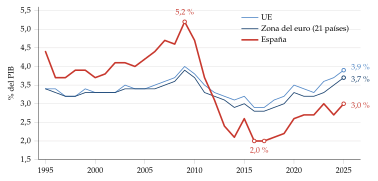
Fuente: Eurostat, Government revenue, expenditure and main aggregates (Eurostat, 2026c); elaboración propia. Formación bruta de capital fijo de las Administraciones Públicas; zona del euro de 21 países.
Conclusión
Recapitulación:
A modo de conclusión,
a corto plazo, el gasto público mueve la producción, pero cuánto depende del modelo: con hogares ricardianos y precios flexibles, el multiplicador es positivo y menor que 1 por el efecto riqueza; con precios rígidos, mayor, y tanto más cuanto más acomode el banco central;
sobre el ahorro: con horizonte infinito, la deuda no cambia el ahorro nacional, pero un impuesto sobre las rentas del capital reduce el capital, y por eso a largo plazo conviene no gravarlas (Chamley y Judd); con generaciones solapadas, el reparto y la deuda reducen el ahorro y el capital, lo que solo mejora el bienestar si la economía es dinámicamente ineficiente;
sobre el crecimiento: con gasto productivo, el tamaño del Estado tiene un óptimo, \(G/Y=1-\alpha\), y los impuestos que gravan la acumulación reducen la tasa de crecimiento, no solo su nivel.
Relevancia:
Con deudas cercanas al 100 % del PIB y una población que envejece, la pregunta ya no es solo cuánto gastar, sino en qué y cómo financiarlo.
Tras bajar la facilidad de depósito al 2 % en junio de 2025, el BCE la ha vuelto a subir, al 2,25 % en junio de 2026 y al 2,50 % en septiembre: con la política monetaria otra vez restrictiva, el margen fiscal depende de la deuda heredada y de que el tipo de interés no supere al crecimiento [ver tema 3.A.39].
Extensiones:
La coordinación con la política monetaria, el policy mix, y quién cierra la restricción del Estado, si el banco central o la política fiscal [ver tema 3.A.36] [ver tema 3.A.39]; los multiplicadores en el límite inferior de los tipos [ver tema 3.A.40]; la imposición óptima [ver tema 4.B.11]; el sistema español de pensiones [ver tema 4.B.24]; la evidencia sobre el crecimiento [ver tema 3.A.45].
Opinión:
La política fiscal se juzgó durante décadas por su multiplicador a corto plazo, cuando sus efectos más duraderos están en la composición: dejar actuar a los estabilizadores automáticos en el ciclo, como pide la suavización impositiva, y proteger la inversión productiva y gravar poco el ahorro y la acumulación para el largo plazo.
Idea final:
Volviendo al refrán del principio, «quien no trabaja en verano, pasa hambre en invierno», la política fiscal puede hacer de hormiga, pero no basta con guardar grano.
A corto plazo, cuando llega el invierno, puede gastar el grano guardado: el gasto sostiene la demanda, y tanto más cuanto más acomode el banco central.
A largo plazo, trabajar en verano es gastar en lo que rinde mañana y no castigar a quien ahorra: el ahorro decide el nivel de la renta; el gasto productivo y los impuestos que no gravan la acumulación, su ritmo de crecimiento; y unas pensiones que no dependan solo del verano de la generación siguiente, el invierno de cada una.
Para el debate sobre si el tipo de interés seguirá por debajo del crecimiento: Blanchard (2023), «Secular stagnation is not over», https://www.
A. Anexo: el modelo IS-LM y la economía abierta
A.1. El equilibrio y los multiplicadores
La IS: con \(C=\overline{C}+c\,(1-t)\,Y\), \(I=\overline{I}-b\,i\) y \(G=\overline{G}\), el mercado de bienes está en equilibrio si \[Y=\frac{\overline{A}-b\,i}{1-c(1-t)},\qquad \overline{A}\equiv\overline{C}+\overline{I}+\overline{G}.\]
La LM: la demanda de dinero depende de la renta (motivos transacción y precaución) y del tipo de interés (motivo especulación) [ver tema 3.A.35], y la oferta la fija el banco central: \(M/P=kY-h\,i\), es decir, \(i=(kY-M/P)/h\).
El equilibrio: sustituyendo la LM en la IS, \[Y^*=\frac{\overline{A}+(b/h)\,M/P}{1-c(1-t)+b\,k/h},\] de donde salen el multiplicador del gasto (1) y el del tipo impositivo, \[\frac{\partial Y^*}{\partial t}=-\frac{c\,Y^*}{1-c(1-t)+b\,k/h}<0\] [ver tema 3.A.5].
Las 2 proposiciones keynesianas: con \(b\,k/h\) pequeño, el multiplicador del gasto supera 1, y es mayor que el de los impuestos, porque el gasto entra entero en la demanda y una rebaja de impuestos solo en la parte que se consume.
El presupuesto equilibrado, de Haavelmo (1945)20: con un impuesto de suma fija \(T\), la inversión dada y \(\Delta\overline{G}=\Delta T\), \((1-c)\,\Delta Y=\Delta\overline{G}-c\,\Delta T=(1-c)\,\Delta\overline{G}\), y el multiplicador es 1.21 En el IS-LM es menor, porque la renta sube el tipo de interés y expulsa inversión.
A.2. El modelo de Mundell-Fleming
a) Idea
A principios de los 60, con Bretton Woods en marcha y los capitales empezando a moverse, Fleming (1962) y Mundell (1963) llevaron el IS-LM a la economía abierta para preguntarse qué eficacia tiene la política fiscal cuando el capital es móvil, con tipo de cambio fijo y con tipo flexible.
Su respuesta, el modelo IS-LM-BP, es el punto de partida de la política fiscal en economía abierta: lo que la vuelve eficaz o ineficaz no es el gasto en sí, sino qué variable se ajusta para mantener el equilibrio exterior, la cantidad de dinero o el tipo de cambio [ver tema 3.A.32].
b) Modelo
i) Supuestos
Precios fijos: \(P=P^*=1\), de modo que el tipo nominal es el real y el tipo de cambio real \(q\) es el nominal.
País pequeño: la renta exterior, \(Y^*\), y el tipo de interés mundial, \(i^*\), están dados.
Expectativas estáticas del tipo de cambio y activos nacionales y extranjeros sustitutos perfectos: sin depreciación esperada ni prima de riesgo.
Condición de Marshall-Lerner: una depreciación real mejora el saldo comercial [ver tema 3.B.12].
Los flujos de capital responden al diferencial de tipos: la cuenta financiera neta es \(\beta_K\,(i-i^*)\), con \(\beta_K\ge0\) la movilidad del capital (\(\beta_K\) local, para no confundirla con el factor de descuento).
Sin esterilización: con tipo fijo, lo que el banco central compra o vende de divisas cambia la base monetaria.
ii) Desarrollo
La IS abierta: con exportaciones netas \(XN=x\,Y^*-m\,Y+\nu\,q\), con \(x\) la propensión a exportar, \(m\) la propensión a importar y \(\nu\) la sensibilidad del saldo comercial al tipo de cambio real, \[Y=\frac{\overline{A}-b\,i+x\,Y^*+\nu\,q}{1-c(1-t)+m}.\] La propensión a importar reduce el multiplicador, porque parte del gasto se va fuera; ese desbordamiento es el que justifica la coordinación internacional y el «efecto locomotora» [ver tema 3.B.19]. Una depreciación (\(q\uparrow\)) desplaza la IS a la derecha.
La LM, la de la economía cerrada, \(M/P=kY-h\,i\). Con tipo fijo, la cantidad de dinero es el crédito interno más las reservas y cambia con cada intervención en el mercado de divisas.
La BP: la balanza de pagos está en equilibrio cuando el saldo comercial se financia con la cuenta financiera, \[x\,Y^*-m\,Y+\nu\,q+\beta_K\,(i-i^*)=0\quad\Longrightarrow\quad \frac{\mathrm{d}i}{\mathrm{d}Y}\bigg|_{\mathrm{BP}}=\frac{m}{\beta_K}.\] Con más renta se importa más, y hace falta un tipo más alto que atraiga el capital que lo financie. Por encima de la BP hay superávit (entran divisas); por debajo, déficit. Una depreciación la desplaza a la derecha. Según la movilidad (gráfico 12):
con movilidad perfecta (\(\beta_K\to\infty\)), horizontal: \(i=i^*\);
con movilidad imperfecta, creciente: la movilidad es alta si la BP es más plana que la LM (\(m/\beta_K<k/h\)) y baja si es más inclinada;
sin movilidad (\(\beta_K=0\)), vertical: solo hay una renta compatible con el equilibrio comercial.
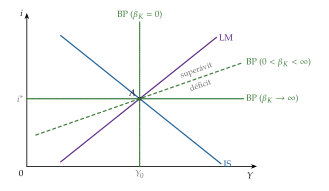
Qué se ajusta: las 3 curvas tienen que cortarse en un punto, y lo que se mueve para lograrlo depende del régimen:
con tipo fijo, la cantidad de dinero: si hay superávit, el banco central compra divisas para que la moneda no se aprecie, la base monetaria crece y la LM se desplaza a la derecha hasta pasar por el corte de la IS y la BP; con déficit, al revés;
con tipo flexible, el tipo de cambio: si hay superávit, la moneda se aprecia, las exportaciones netas caen y la IS y la BP se desplazan a la izquierda hasta cortarse sobre la LM, que controla el banco central; con déficit, la moneda se deprecia y se desplazan a la derecha.
En los 4 ejemplos que siguen, la economía parte de \(A\), el gasto público sube y la IS pasa a IS\('\). \(B\) es el corte de IS\('\) y LM, antes de que reaccionen las reservas o el tipo de cambio; \(C\), el equilibrio final.
iii) Implicaciones: 4 ejemplos de una expansión fiscal
Ejemplo 1: tipo fijo y movilidad perfecta (gráfico 13). La política fiscal es muy eficaz:
Paso 1: el gasto desplaza la IS a IS\('\); con la LM dada, la renta y el tipo suben hasta \(B\).
Paso 2: en \(B\), \(i>i^*\): entra capital sin límite y la moneda tiende a apreciarse.
Paso 3: para defender el tipo de cambio, el banco central compra divisas; la base monetaria crece y la LM se desplaza a LM\('\).
Paso 4: el ajuste acaba en \(C\), con \(i=i^*\): el tipo de interés no ha subido, no hay expulsión de la inversión y el multiplicador es el de la economía abierta con el tipo dado, \(1/[1-c(1-t)+m]\). El dinero acompaña al gasto.
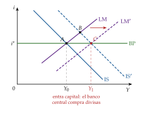
Ejemplo 2: tipo flexible y movilidad perfecta (gráfico 14). La política fiscal es ineficaz:
Paso 1: el gasto desplaza la IS a IS\('\) y la economía va a \(B\), con \(i>i^*\).
Paso 2: entra capital y, como el banco central no interviene, la moneda se aprecia.
Paso 3: la apreciación abarata las importaciones y encarece las exportaciones: las exportaciones netas caen y la IS vuelve hacia la izquierda.
Paso 4: el proceso solo se para cuando el tipo vuelve a \(i^*\); con la LM fija, eso exige la renta inicial: \(C=A\). La expulsión es total, pero no de la inversión, sino de las exportaciones netas: el saldo exterior empeora en lo que sube el gasto (los déficits gemelos) [ver tema 3.B.11].
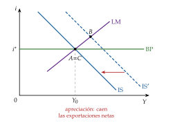
Ejemplo 3: tipo fijo y movilidad imperfecta (gráfico 15). La eficacia depende de si la BP es más plana o más inclinada que la LM:
Movilidad alta (panel a):
en \(B\) el tipo ha subido lo bastante para que la entrada de capital supere al deterioro comercial: hay superávit;
el banco central compra divisas, la LM se desplaza a la derecha y el ajuste acaba en \(C\), en el corte de IS\('\) y BP: la renta sube más que en el IS-LM cerrado, y la política fiscal es eficaz.
Movilidad baja (panel b):
en \(B\) la entrada de capital no compensa el aumento de las importaciones: hay déficit;
el banco central vende divisas, la base monetaria cae y la LM se desplaza a la izquierda; en \(C\) el tipo es más alto y la renta, menor que en \(B\): la política fiscal es poco eficaz.
En el límite, sin movilidad, la BP es vertical y el ajuste monetario devuelve la renta a la que equilibra el comercio: la política fiscal es ineficaz.
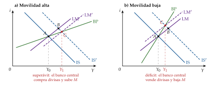
Ejemplo 4: tipo flexible y movilidad imperfecta (gráfico 16). Ahora la LM no se mueve y el tipo de cambio desplaza a la vez la IS y la BP:
Movilidad alta (panel a):
en \(B\) hay superávit y la moneda se aprecia;
las exportaciones netas caen: IS\('\) se desplaza a IS\(''\) y la BP a BP\('\), y el equilibrio final \(C\) queda sobre la LM, entre \(A\) y \(B\): la política fiscal es poco eficaz.
Movilidad baja (panel b):
en \(B\) hay déficit y la moneda se deprecia;
las exportaciones netas suben: la IS y la BP se desplazan a la derecha y \(C\) queda por encima de \(B\) sobre la LM: la depreciación refuerza el gasto y la política fiscal es eficaz.
En el límite, sin movilidad, la depreciación mantiene el comercio equilibrado y el multiplicador es el del IS-LM cerrado sin importaciones, \(1/[1-c(1-t)+b\,k/h]\): la política fiscal es muy eficaz.
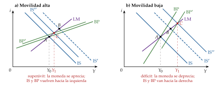
En resumen (tabla 4), la política fiscal gana eficacia con la movilidad del capital si el tipo es fijo y la pierde si es flexible: con tipo fijo, el multiplicador es \(\beta_K/\{[1-c(1-t)]\,\beta_K+m\,(b+\beta_K)\}\), creciente en \(\beta_K\); con tipo flexible, \(h/\{h\,[1-c(1-t)]+(b+\beta_K)\,k\}\), decreciente.
| Movilidad del capital | Perfecta | Alta | Baja | Nula |
|---|---|---|---|---|
| Tipo de cambio fijo | Muy eficaz | Eficaz | Poco eficaz | Ineficaz |
| Tipo de cambio flexible | Ineficaz | Poco eficaz | Eficaz | Muy eficaz |
Fuente: Elaboración propia a partir de Mundell (1963) y Heijdra (2017).
c) Valoración
A favor: con 3 curvas da la intuición que sigue usando la política económica: en una unión monetaria, o con tipo fijo, la política fiscal es el instrumento que le queda a cada país [ver tema 3.B.40]; con tipo flexible y capital móvil, el gasto se va en apreciación y déficit exterior.
En contra: precios fijos, expectativas estáticas del tipo de cambio y un enfoque de flujos (mientras haya diferencial, entra capital sin fin); y, como el IS-LM, no tiene restricción intertemporal del Estado ni de la nación. Los modelos de equilibrio general de economía abierta con hogares que optimizan revisan estos resultados (anexo D) [ver tema 3.A.32].
B. Anexo: el modelo de ciclo real con política fiscal paso a paso
El hogar. Con el multiplicador \(\beta^t\lambda_t\) de su restricción en cada periodo, el lagrangiano es \[\mathcal{L}=\mathbb{E}_0\sum_{t=0}^{\infty}\beta^t\Big\{u(C_t,L_t)+\lambda_t\Big[(1-\tau_{L,t})\,w_tL_t+\big[1+(1-\tau_{K,t})\,r_t\big]K_t+(1+r^D_{t-1})\,D_{t-1}-T_t-C_t-K_{t+1}-D_t\Big]\Big\},\] con \(u(C_t,L_t)=(C_t^{1-\theta}-1)/(1-\theta)-\chi L_t^{1+\varphi}/(1+\varphi)\). Las condiciones de primer orden: \[\begin{aligned} C_t:&\quad C_t^{-\theta}=\lambda_t,\\ L_t:&\quad \chi L_t^{\varphi}=\lambda_t\,(1-\tau_{L,t})\,w_t,\\ K_{t+1}:&\quad \lambda_t=\beta\,\mathbb{E}_t\big[\lambda_{t+1}\big(1+(1-\tau_{K,t+1})\,r_{t+1}\big)\big],\\ D_t:&\quad \lambda_t=\beta\,\mathbb{E}_t\big[\lambda_{t+1}\big](1+r^D_t), \end{aligned}\] más la condición de transversalidad, que descarta acumular deuda o capital sin límite [ver tema 3.A.29]. Eliminando \(\lambda_t\) salen la ecuación de Euler, la oferta de trabajo y la condición de los bonos, (4)-(6) de la tabla 1. Las de capital y bonos juntas son una condición de no arbitraje: sin incertidumbre, \(r^D_t=(1-\tau_{K,t+1})\,r_{t+1}\); el bono y el capital rinden lo mismo después de impuestos.
La empresa alquila capital y trabajo cada periodo: maximiza \(A_tK_t^{\alpha}L_t^{1-\alpha}-w_tL_t-(r_t+\delta)K_t\) y paga los productos marginales, (2) y (3) de la tabla 1. No tiene un problema intertemporal, porque el hogar es el dueño del capital y decide la inversión; con costes de ajuste lo tendría [ver tema 3.A.34].
El Estado cumple (3) cada periodo y una condición de no juego de Ponzi: la deuda no puede crecer más deprisa que el tipo de interés. Encadenando sus restricciones, el valor actual de sus ingresos tiene que cubrir el de su gasto más la deuda inicial [ver tema 3.A.39].
El equilibrio. Sumando las restricciones del hogar y del Estado, los impuestos, los intereses y la deuda se cancelan y queda la de recursos, (4). Con impuestos de suma fija, ninguna de las condiciones de la tabla 1 contiene \(T_t\) ni \(D_t\), y la restricción del Estado solo determina la deuda: dada la senda del gasto, la del déficit es indiferente. Es la equivalencia ricardiana; con \(\tau_{L,t}\) o \(\tau_{K,t}\) variables, no.
La simulación de la tabla 2 y del gráfico 2: el modelo se log-lineariza alrededor del estado estacionario sin perturbación tecnológica y se resuelve por el método de Blanchard y Kahn, como el del ciclo real [ver tema 3.A.42]. Con \(\alpha=1/3\), \(\beta=0{,}99\) y \(\delta=0{,}025\) (trimestral), el capital es 9,5 veces la producción trimestral, la inversión el 23,7 % del PIB, el consumo el 56,3 % y el gasto el 20 %. En el caso del impuesto sobre el trabajo, el tipo se ajusta cada periodo para que \(\tau_{L,t}w_tL_t=G_t\), sin deuda.
C. Anexo: el modelo neokeynesiano con política fiscal
a) Idea
El modelo canónico de la nueva economía keynesiana tiene banco central, pero no Estado: todo lo que se produce se consume [ver tema 3.A.7]. Para estudiar la política fiscal se le añade un Estado que gasta y cobra impuestos, como en el ciclo real (I.2), sin tocar lo demás.
La pregunta: ¿cuánto mueve la producción un aumento del gasto público cuando los precios son rígidos, y por qué depende de lo que haga el banco central?
b) Modelo
i) Supuestos
Hogares: uno representativo, de vida infinita, con utilidad separable en consumo y trabajo; tiene los bonos del Estado y es dueño de las empresas.
Empresas: un continuo \(i\in[0,1]\) en competencia monopolística, con \(Y_t(i)=A_tL_t(i)\) y precios a la Calvo: cada periodo, cada empresa revisa su precio con probabilidad \(1-\eta\) [ver tema 3.A.7].
Estado: compra \(G_t\) unidades del mismo índice de bienes que consumen los hogares, que no les dan utilidad (o se la dan de forma separable, sin cambiar sus decisiones), y lo financia con impuestos de suma fija, \(T_t\), y bonos nominales a un periodo, \(B_t\) (\(B_t\) local, como en el canónico).
Banco central: fija el tipo nominal, \(i_t\), con una regla.
Perturbaciones: además de las del canónico, el gasto, que en logaritmos sigue un proceso autorregresivo, \(g_t=\rho_G\,g_{t-1}+\varepsilon^G_t\), en desviaciones de su estado estacionario, con \(0\le\rho_G<1\).
ii) Desarrollo
Paso 1, el hogar:
resuelve \[\begin{array}{rl}\displaystyle \max_{\{C_t,L_t,B_t\}} & \displaystyle \mathbb{E}_0\sum_{t=0}^{\infty}\beta^t\left(\frac{C_t^{1-\theta}-1}{1-\theta}-\frac{L_t^{1+\varphi}}{1+\varphi}\right) \\ \text{s.a.} & P_tC_t+\frac{B_t}{1+i_t}\le B_{t-1}+W_tL_t+\Pi_t-P_tT_t\end{array}\] con \(\Pi_t\) los beneficios de las empresas (\(\Pi_t\), local);
de las condiciones de primer orden salen la oferta de trabajo, \(W_t/P_t=C_t^{\theta}L_t^{\varphi}\), y la ecuación de Euler, \(1=\beta\,(1+i_t)\,\mathbb{E}_t\big[(C_{t+1}/C_t)^{-\theta}P_t/P_{t+1}\big]\);
en logaritmos, \(w_t-p_t=\theta\,c_t+\varphi\,l_t\) y \(c_t=\mathbb{E}_t[c_{t+1}]-\frac{1}{\theta}\big(i_t-\mathbb{E}_t[\pi_{t+1}]-\rho\big)\), con \(\rho\equiv-\ln\beta\).
Paso 2, el Estado y la equivalencia ricardiana:
su restricción en cada periodo es \(P_tG_t+B_{t-1}=P_tT_t+B_t/(1+i_t)\) y, con la condición de no juego de Ponzi, el valor actual de los impuestos cubre el del gasto más la deuda inicial [ver tema 3.A.39];
llevándola a la restricción del hogar, los impuestos y los bonos desaparecen: el hogar solo ve el gasto, \(P_tC_t=W_tL_t+\Pi_t-P_tG_t\). Ninguna condición de equilibrio depende de \(T_t\) ni de \(B_t\): con impuestos de suma fija, da igual financiar el gasto con impuestos o con deuda, como en el ciclo real (I.2).
Paso 3, el equilibrio de bienes:
cada variedad la compran los hogares y el Estado, \(Y_t(i)=C_t(i)+G_t(i)\), y, con el mismo índice, \(Y_t=C_t+G_t\);
con \(g_t\equiv-\ln(1-G_t/Y_t)\), \(\ln C_t=\ln Y_t+\ln(1-G_t/Y_t)\), es decir, \(c_t=y_t-g_t\) sin aproximación; y, como \(G_t/Y_t\) es pequeño, \(g_t\simeq G_t/Y_t\), de modo que \(\Delta y_t/\Delta g_t\simeq\Delta Y_t/\Delta G_t\), el multiplicador.
Paso 4, la IS con gasto: con \(c_t=y_t-g_t\) en la ecuación de Euler se obtiene (5).
Paso 5, la producción y el tipo naturales:
con precios flexibles, el salario real es \(A_t/(1+\mu)\): \(w_t-p_t=a_t-\mu\), con \(1+\mu\) el margen deseado;
igualándolo a la oferta de trabajo, con \(c_t=y_t-g_t\) y \(l_t=y_t-a_t\): \(\theta\,(y_t-g_t)+\varphi\,(y_t-a_t)=a_t-\mu\), y despejando sale (6): \(\partial y^n_t/\partial g_t=\Gamma=\theta/(\theta+\varphi)\);
el tipo natural es el tipo real que hace que la IS se cumpla con \(y_t=y^n_t\): \(r^n_t=\rho+\theta\,\mathbb{E}_t[\Delta y^n_{t+1}]-\theta\,\mathbb{E}_t[\Delta g_{t+1}]\). Con solo el gasto y \(\mathbb{E}_t[g_{t+1}]=\rho_G\,g_t\), \[r^n_t-\rho=\theta\,(1-\Gamma)(1-\rho_G)\,g_t:\] un aumento del gasto sube el tipo natural, tanto menos cuanto más dura;
restando la IS con precios flexibles de (5) queda la IS en términos de la brecha, \(x_t=\mathbb{E}_t[x_{t+1}]-\frac1\theta\big(i_t-\mathbb{E}_t[\pi_{t+1}]-r^n_t\big)\).
Paso 6, la curva de Phillips:
el coste marginal real es el salario real entre la productividad: \(\mathrm{cmg}_t=(w_t-p_t)-a_t=\theta\,(y_t-g_t)+\varphi\,(y_t-a_t)-a_t\);
con precios flexibles vale \(-\mu\); restando, \(\widehat{\mathrm{cmg}}_t=(\theta+\varphi)\,(y_t-y^n_t)=(\theta+\varphi)\,x_t\): el gasto no entra suelto;
con Calvo, la inflación es el valor presente de los costes marginales futuros y se obtiene (7) con la pendiente \(\kappa=\frac{(1-\eta)(1-\beta\eta)}{\eta}(\theta+\varphi)\), la misma del canónico [ver tema 3.A.7].
Paso 7, la solución con una regla de Taylor:
se prueban soluciones \(x_t=\psi_x\,g_t\) y \(\pi_t=\psi_\pi\,g_t\), con \(\mathbb{E}_t[x_{t+1}]=\rho_G\,x_t\) y \(\mathbb{E}_t[\pi_{t+1}]=\rho_G\,\pi_t\) (coeficientes indeterminados);
de la curva de Phillips, \(\psi_\pi\,(1-\beta\rho_G)=\kappa\,\psi_x\);
de la IS, con (8) sin \(\varepsilon_t\), \(\theta\,(1-\rho_G)\,\psi_x=-(\phi_\pi-\rho_G)\,\psi_\pi-\phi_x\,\psi_x+\theta\,(1-\Gamma)(1-\rho_G)\);
sustituyendo \(\psi_\pi\) y llamando \[\Omega\equiv\frac{\kappa\,(\phi_\pi-\rho_G)+\phi_x\,(1-\beta\rho_G)}{\theta\,(1-\rho_G)(1-\beta\rho_G)}>0\] (\(\Omega\), local), \(\psi_x=(1-\Gamma)/(1+\Omega)\);
el multiplicador es lo que sube la producción natural más lo que sube la brecha: \[\tag{21} m=\Gamma+\psi_x=\frac{1+\Omega\,\Gamma}{1+\Omega}\in(\Gamma,1),\] una media ponderada de 1 y de \(\Gamma\), y el consumo cae, \(m-1<0\). ∎
Paso 8, los casos límite:
precios flexibles (\(\eta\to0\), \(\kappa\to\infty\)): \(\Omega\to\infty\) y \(m=\Gamma\), el multiplicador del ciclo real sin capital;
regla muy agresiva (\(\phi_\pi\to\infty\)): también \(m\to\Gamma\), porque el banco central anula la brecha;
tipo real constante (\(i_t-\mathbb{E}_t[\pi_{t+1}]=\rho\)): en la IS de la producción, \(y_t-g_t=\mathbb{E}_t[y_{t+1}-g_{t+1}]\); como la economía vuelve al estado estacionario, el consumo no cambia nunca y \(m=1\) (\(\Omega=0\)). ∎
Paso 9, el límite inferior de los tipos:
una perturbación de demanda lleva el tipo natural por debajo de cero y el banco central deja el tipo nominal en su límite; cada periodo, el episodio sigue con probabilidad \(\rho_L\) (\(\rho_L\), local) y el gasto, \(g_L\), dura lo mismo; al acabar, todo vuelve al estado estacionario;
mientras dura, las expectativas son \(\mathbb{E}_t[x_{t+1}]=\rho_L\,x_L\) y \(\mathbb{E}_t[\pi_{t+1}]=\rho_L\,\pi_L\), y, con el tipo nominal fijo, la parte de la brecha que se debe al gasto cumple \[(1-\rho_L)\,x_L=\tfrac1\theta\,\rho_L\,\pi_L+(1-\Gamma)(1-\rho_L)\,g_L,\qquad(1-\beta\rho_L)\,\pi_L=\kappa\,x_L;\]
con \(\Omega_L\equiv\rho_L\kappa/[\theta(1-\rho_L)(1-\beta\rho_L)]\) (\(\Omega_L\), local), \(x_L=(1-\Gamma)\,g_L/(1-\Omega_L)\) y \[\tag{22} m_L=\Gamma+\frac{1-\Gamma}{1-\Omega_L}>1\quad\text{si}\quad0<\Omega_L<1:\] el gasto sube la inflación esperada, el tipo nominal no responde y el tipo real baja; el consumo sube. El multiplicador crece sin límite si \(\Omega_L\) se acerca a 1 (episodios largos, precios poco rígidos). ∎
Ejemplo numérico (gráfico 3): con \(\beta=0{,}99\), \(\theta=\varphi=1\) (\(\Gamma=0{,}5\)), \(\kappa=0{,}02\), \(\phi_\pi=1{,}5\), \(\phi_x=0\) y \(\rho_G=0{,}8\), \(\Omega\approx0{,}34\) y el multiplicador con la regla es 0,87; en el límite inferior, con \(\rho_L=0{,}8\) (5 trimestres de media), 1,31, y con \(\rho_L=0{,}85\) (6,7 trimestres), 2,25.
iii) Implicaciones
El multiplicador no es un parámetro: lo decide sobre todo la política monetaria. Con un banco central que neutraliza la demanda, el gasto apenas estabiliza y el consumo cae; cuando el banco central no puede o no quiere moverse, el gasto es potente.
La persistencia del gasto actúa en 2 sentidos: un gasto más duradero sube más la producción natural en el conjunto de su vida, pero sube menos el tipo natural en cada periodo y, con la regla de Taylor, el multiplicador de impacto baja algo.
La financiación es irrelevante con impuestos de suma fija y hogares ricardianos (paso 2): el gasto importa, el déficit no.
La política fiscal y la monetaria son sustitutos imperfectos: en una unión monetaria, el tipo común no responde al gasto de un solo país, y la política fiscal es el instrumento que le queda frente a sus perturbaciones propias [ver tema 3.B.40].
c) Extensiones: hogares que viven al día
Galí, López-Salido y Vallés (2007) añaden una fracción \(\lambda\) de hogares de regla de pulgar (rule of thumb), que no ahorran ni se endeudan y consumen cada periodo su renta neta de impuestos; el resto, \(1-\lambda\), son ricardianos y siguen la ecuación de Euler.
El consumo agregado es la media de los 2: \(C_t=\lambda\,C^r_t+(1-\lambda)\,C^o_t\), con \(C^r_t=(W_t/P_t)\,L^r_t-T^r_t\) (\(r\) de regla de pulgar y \(o\) de optimizadores, locales).
La IS agregada deja de depender solo de los tipos de interés: entran directamente la renta corriente y los impuestos de hoy. Por eso el calendario de los impuestos importa y la equivalencia ricardiana falla: financiar el gasto con deuda y no con impuestos sostiene la renta de los que viven al día.
El resultado: con precios rígidos, el gasto sube la demanda de trabajo y el salario real; los hogares de regla de pulgar consumen más, y, si \(\lambda\) es alto y el gasto se financia sobre todo con deuda, el consumo agregado sube y el multiplicador supera 1, como en los datos. Para que ocurra hace falta, además, que el empleo lo determine la demanda (salarios que no se ajustan al instante); con un mercado de trabajo competitivo, el efecto riqueza de los ricardianos sigue dominando.
Su versión moderna son los modelos con agentes heterogéneos (heterogeneous agent New Keynesian, HANK), en los que cada hogar tiene su propia propensión marginal a consumir [ver tema 3.A.40].
d) Evidencia empírica
En modelos neokeynesianos estimados con regla de Taylor, el multiplicador ronda 1; con el tipo nominal en cero llega a 1,6 en el impacto y a 2,3 en su máximo si el gasto dura 12 trimestres.
Las estimaciones empíricas del multiplicador del gasto están, en su mayoría, entre 0,6 y 1, y son mayores cuando la política monetaria acompaña o los tipos están en su límite inferior [ver tema 3.A.40].
El consumo privado sube tras un aumento del gasto en los modelos de vectores autorregresivos: lo reproduce la extensión con hogares que viven al día, no el modelo con un solo hogar ricardiano.
e) Valoración
A favor: con muy pocos cambios sobre el modelo canónico, explica por qué el mismo gasto tiene efectos tan distintos según el banco central y por qué los multiplicadores fueron altos con los tipos en cero.
En contra: no tiene capital ni inversión pública productiva, así que no dice nada del crecimiento; el gasto no da utilidad ni produce; los impuestos de suma fija dejan fuera la distorsión de los impuestos reales (I.2), y los resultados en el límite inferior son muy sensibles a cuánto dura el episodio.
D. Anexo: la política fiscal en economía abierta con expectativas racionales (Corsetti y Pesenti)
a) Idea
En el cuerpo de la exposición la economía es cerrada. En economía abierta, la pregunta es doble: ¿qué hace el gasto público de un país con su producción y su consumo, y qué le hace al otro país?
La respuesta tradicional es la del IS-LM-BP (anexo A): con movilidad perfecta del capital y tipo de cambio flexible, la expansión fiscal aprecia la moneda, no mueve la producción propia y sube la del otro país por sus exportaciones. Es un modelo sin microfundamentos, sin expectativas y sin bienestar.
La nueva macroeconomía abierta (new open economy macroeconomics), que inauguran Obstfeld y Rogoff (1995), lleva a 2 países el equilibrio general con agentes que optimizan, competencia monopolística y rigideces nominales [ver tema 3.A.37]. Corsetti y Pesenti (2001) la simplifican hasta tener una solución cerrada, sin linealizar, que se lee en un gráfico como el IS-LM y permite medir el bienestar de cada país.
Con HER: la hipótesis de expectativas racionales (HER) que, desde los años 70, exigen los modelos con microfundamentos. Con ella y con impuestos de suma fija, los hogares son ricardianos: saben que el gasto se paga y da igual pagarlo con impuestos hoy o con deuda e impuestos mañana (I.2). Por eso el modelo puede suponer, sin pérdida de generalidad, que el Estado equilibra su presupuesto cada periodo.
Conclusión anticipada: a corto plazo, con los salarios fijados, el gasto propio sube la producción lo mismo que el gasto y no cambia el consumo; a largo plazo mejora la relación real de intercambio del país, reduce el consumo de los 2 países y empobrece al vecino: la política fiscal es de empobrecer al vecino (beggar-thy-neighbour).
b) Modelo
i) Supuestos
2 países, el propio y el extranjero (con asterisco), cada uno especializado en un bien comerciable. El tamaño del país propio, \(\omega\in(0,1)\), es también el peso de su bien en la cesta de consumo de todos (\(\omega\), local).
Hogares: viven infinitos periodos y maximizan \[U_t=\sum_{s=t}^{\infty}\beta^{s-t}\left[\frac{C_s^{1-\theta}}{1-\theta}+\chi_M\ln\frac{M_s}{P_s}+V(G_s)-\kappa\,\ell_s\right],\] con \(1/\theta\) la elasticidad de sustitución intertemporal, \(M/P\) los saldos reales, \(V(G)\) la utilidad de los bienes públicos (nula si el gasto es puro despilfarro) y \(\kappa\,\ell\) la desutilidad, lineal, del trabajo (\(\chi_M\), \(\kappa\), locales).
La cesta es Cobb-Douglas en los 2 bienes, \(C=C_H^{\omega}C_F^{1-\omega}\), igual en los 2 países: la elasticidad de sustitución entre el bien propio y el extranjero es 1. Se cumple la paridad del poder adquisitivo, \(P=E\,P^*\), con \(E\) el tipo de cambio nominal (unidades de moneda propia por unidad de extranjera).
Ahorran en dinero propio y en un bono internacional real, de oferta neta nula.
Producción: lineal en el trabajo, \(Y=\ell\), con un continuo de tipos de trabajo diferenciados. Cada hogar es monopolista de su trabajo (elasticidad de sustitución \(\Phi>1\), local): la producción queda por debajo de la eficiente.
Rigidez nominal: los salarios nominales, y con ellos los precios de producción, se fijan un periodo por adelantado en la moneda del productor (producer currency pricing); a corto plazo el empleo se ajusta a la demanda y a largo plazo los salarios son flexibles.
El Estado: compra solo bienes propios, \(G\), y los financia con impuestos de suma fija. El tono fiscal es \(\Gamma\equiv Y/(Y-G)\), igual a 1 sin gasto y creciente con \(G/Y\) (\(\Gamma\), local: en el original es \(g\), que aquí es el progreso técnico). La perturbación es una subida inesperada y permanente de \(G/Y\); la temporal se trata después.
Notación: el subíndice \(R\) es el cociente entre el país propio y el extranjero (\(\Gamma_R=\Gamma/\Gamma^*\), \(M_R=M/M^*\)) y el \(W\), la media geométrica mundial con pesos \(\omega\) y \(1-\omega\) (\(\Gamma_W=\Gamma^{\omega}(\Gamma^*)^{1-\omega}\)); la relación real de intercambio es \(\mathcal{T}\equiv P_H/(E\,P^*_F)\), el precio del bien propio en términos del extranjero (\(\mathcal{T}\), local).
ii) Desarrollo
Paso 1: las ecuaciones de equilibrio.
Ecuación de Euler en cada país, con el mismo tipo real \(r\) (el bono es común); entre el corto plazo y el largo (con barra): \[C^{-\theta}=\beta\,(1+r)\,\overline{C}^{-\theta},\qquad (C^*)^{-\theta}=\beta\,(1+r)\,(\overline{C}^*)^{-\theta}.\]
Mercados de bienes: la renta real de cada país, neta del gasto, es una fracción fija del consumo mundial (por la cesta Cobb-Douglas): \[\frac{P_H\,(Y-G)}{P}=\omega\,(C+C^*),\qquad \frac{P^*_F\,(Y^*-G^*)}{P^*}=(1-\omega)\,(C+C^*).\]
Mercados de dinero: la demanda de saldos reales depende del consumo y del tipo de interés nominal.
Mercado de trabajo (solo a largo plazo, cuando los salarios se ajustan): el salario real, corregido por el poder de mercado, iguala la relación marginal de sustitución, \(\frac{\Phi-1}{\kappa\,\Phi}\,\frac{P_H}{P}=C^{\theta}\).
Paso 2: la cuenta corriente no se mueve.
Las 2 ecuaciones de Euler implican que el cociente \(C/C^*\) no puede cambiar de forma esperada: es el mismo a corto y a largo plazo.
Con las restricciones de los 2 países, eso exige que el saldo de bonos sea nulo: \(C/C^*=\omega/(1-\omega)\) y la cuenta corriente es 0 tras cualquier perturbación permanente. Con elasticidad unitaria, cuando un bien se abarata, su productor vende más en la misma proporción y su renta real no cambia: la relación real de intercambio reparte el riesgo y no hace falta prestar.
Es la gran diferencia con Obstfeld y Rogoff (1995), donde la elasticidad es mayor que 1 y las perturbaciones dejan desequilibrios de la cuenta corriente y redistribuyen la riqueza entre países.
Paso 3: el tipo de cambio. Dividiendo las condiciones de los 2 mercados de dinero, el tipo de cambio nominal salta en el impacto a su valor de largo plazo, sin sobrerreacción, y solo depende de la oferta monetaria relativa, \(E=\overline{E}\propto M_R\): el gasto público no lo mueve.22
Paso 4: el aparato gráfico. En el plano \((Y,C)\) del país propio (gráfico 17), 3 curvas:
GE, equilibrio del mercado de bienes: un rayo desde el origen, \(Y=\Psi(\Gamma,\Gamma^*,\mathcal{T})\,C\). Más consumo pide más bien propio; cualquier cosa que desvíe demanda hacia él (más gasto propio o ajeno, un bien propio más barato) hace el rayo más plano.
LE, equilibrio del mercado de trabajo, decreciente, \(Y\propto\Lambda(\Gamma_R)\,C^{-\theta}\): con más consumo, los hogares quieren más ocio. Un salario real más alto, por una relación real de intercambio mejor, la desplaza a la derecha. Solo cuenta a largo plazo.
ME, equilibrio monetario, horizontal: a corto plazo, con los precios fijados, \(C^{\theta}\propto M_W\); el consumo lo fijan los saldos reales mundiales. A largo plazo el dinero es neutral y ME solo determina los precios.
Las curvas de indiferencia en \((Y,C)\) son crecientes y convexas: el bienestar sube hacia el noroeste (más consumo, menos trabajo). Eso permite leer el bienestar en el mismo gráfico.
Paso 5: una expansión fiscal propia (panel a).
A corto plazo (de \(O\) a 1): con los precios fijados y el tipo de cambio sin cambios, la relación real de intercambio no se mueve. El gasto añade demanda de bien propio a precios dados: GE se hace más plana y la economía avanza por ME. El consumo, fijado por los saldos reales, no cambia; la producción sube lo mismo que el gasto:
\[Y-G\ \text{constante}\quad\Longrightarrow\quad \Delta Y=\Delta G,\qquad \Delta C=\Delta C^*=0\tag{23}\]
Es un multiplicador igual a 1, como el del presupuesto equilibrado (anexo A): la mayor demanda pública se atiende con más producción propia, sin expulsar exportaciones netas. El punto 1 queda por encima de LE: se trabaja más de lo que se querría a esos precios.
El tipo de interés real mundial baja: los hogares saben que el consumo futuro será menor, y por la ecuación de Euler, con el consumo de hoy dado, \(1+r=(1/\beta)(C/\overline{C})^{-\theta}<1/\beta\). Al revés que en el IS-LM, donde el gasto sube el tipo.
A largo plazo (de 1 a 2): los salarios del país suben por la mayor demanda permanente de su bien, que se encarece: la relación real de intercambio mejora y la moneda se aprecia en términos reales. La apreciación compensa en parte la mayor demanda (GE de largo plazo, entre la inicial y la de corto plazo) y el salario real más alto desplaza LE a la derecha.
En el nuevo estado estacionario, 2, la producción es mayor y el consumo menor que en \(O\): la producción sube menos que el gasto, \(Y-G\) baja y cae la oferta mundial de bienes de consumo. Como \(C/C^*\) no cambia, el consumo de los 2 países cae en la misma proporción.
Paso 6: lo que recibe el otro país (panel b, visto desde el propio cuando el que gasta es el extranjero).
A corto plazo, nada: ni el consumo mundial ni la relación real de intercambio cambian, y el punto 1 coincide con \(O\). Solo baja el tipo de interés real, por el menor consumo futuro.
A largo plazo, empeora la relación real de intercambio del país que no gasta: su salario real baja y LE se desplaza a la izquierda; el consumo cae sin ambigüedad.
Su producción puede subir o bajar. El otro país retira bienes del consumo mundial: si los 2 bienes son sustitutos (\(\theta>1\), la elasticidad intertemporal, \(1/\theta\), menor que la intratemporal, 1), la demanda se desvía hacia el bien propio y su producción sube; si son complementarios (\(\theta<1\), el caso del gráfico), baja.
Paso 7: el bienestar.
Si el gasto propio no da utilidad (\(V=0\)), el bienestar del país que gasta cae sin ambigüedad: los puntos 1 y 2 están al sureste de \(O\), con más trabajo y, a largo plazo, menos consumo. Solo compensa si el Estado convierte bienes privados en bienes públicos que valen más (\(V'>0\)): el tono fiscal óptimo iguala esa ganancia a los costes anteriores.
El bienestar del otro país también cae, dentro de los valores admisibles del gasto: a largo plazo, la expansión fiscal empobrece al vecino; simétricamente, una contracción fiscal en el extranjero sube el bienestar propio.
A corto plazo, el gasto sube la demanda propia a relación real de intercambio dada y reduce lo que gana el país con una expansión monetaria.
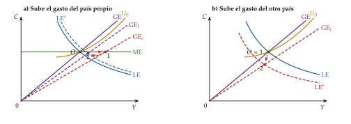
Fuente: Elaboración propia a partir de Corsetti y Pesenti (1997), figs. 5 y 6. Plano de la producción y el consumo del país propio. GE, equilibrio del mercado de bienes; LE, del de trabajo; ME, del monetario (solo a corto plazo); \(U_0\), la curva de indiferencia que pasa por \(O\). a) Corto plazo, de \(O\) a 1; largo plazo, de 1 a 2. b) Caso con \(\theta<1\): la producción baja; con \(\theta>1\) subiría.
iii) Implicaciones
La equivalencia ricardiana se mantiene en economía abierta: con HER e impuestos de suma fija da igual cómo se financie el gasto, y tampoco importa cómo se reparta el endeudamiento exterior entre hogares y Estado: lo que cuenta es la posición del país en su conjunto.
A corto plazo la política fiscal es eficaz incluso con tipo de cambio flexible y movilidad perfecta del capital, al revés que en el IS-LM-BP: no aprecia la moneda (que solo depende del dinero) ni expulsa exportaciones netas, y su multiplicador es 1.
A largo plazo transmite costes, no beneficios: mejora la relación real de intercambio del que gasta, reduce el consumo de todos y el bienestar del vecino. La transmisión internacional va por los precios relativos y no por la cuenta corriente, que no se mueve.
El tamaño del país: cuanto mayor es \(\omega\), más pesa su gasto en el tono fiscal mundial, \(\Gamma_W\), y más cae el consumo mundial; un país pequeño mueve sobre todo su relación real de intercambio.
Coordinación: si cada país ignora el daño que su gasto hace al otro, gastan de más; una contracción conjunta, sin embargo, no mejora por fuerza el bienestar mundial, porque depende de cuánto valga el gasto en bienes públicos [ver tema 3.B.19].
Un gasto temporal tiene el mismo efecto a corto plazo; después, la economía vuelve a \(O\).
c) Extensiones
Gasto que da utilidad o productivo: con \(V'>0\) el tono fiscal óptimo es positivo; con el gasto como factor de la producción, como en el modelo de Barro (III.1), el gasto puede subir también el consumo a largo plazo.
Precios en la moneda del comprador (local currency pricing): si los exportadores fijan los precios en la moneda del país al que venden, el tipo de cambio apenas mueve a corto plazo los precios de importación y cambia la transmisión entre países; es la extensión de la geometría de Corsetti y Pesenti (2009), con el mismo plano y la producción en el eje horizontal [ver tema 3.A.37].
Unión monetaria: con un tipo de interés común, la política fiscal es el único instrumento frente a una perturbación propia, y su multiplicador nacional es mayor [ver tema 3.B.40].
d) Evidencia empírica
En Estados Unidos, el Reino Unido, Canadá y Australia, un aumento del gasto público deprecia el tipo de cambio real, empeora la balanza comercial y sube el consumo privado: lo contrario de lo que predicen el modelo y sus parientes de ciclo real, en los que la moneda se aprecia y el consumo cae. Es el mismo problema del consumo que en economía cerrada (I.2), ahora también con el tipo de cambio.
e) Valoración
A favor: solución cerrada, sin linealizar ni simular; un gráfico que se lee como el IS-LM y, a la vez, mide el bienestar; y una conclusión que corrige la sabiduría convencional: a largo plazo, la expansión fiscal de un país no ayuda a sus socios.
En contra: la elasticidad unitaria apaga la cuenta corriente, justo la variable que más se discute en economía abierta; no hay capital ni inversión; el gasto recae solo en bienes propios y se paga con impuestos de suma fija; la rigidez dura un periodo, y la respuesta del tipo de cambio real y del consumo es la contraria a la de los datos.
E. Anexo: la suavización impositiva
El punto de partida: si se cumple la equivalencia ricardiana, el Estado no tiene motivo para elegir una senda de déficit. Pero los impuestos reales cambian precios relativos, y entonces su reparto en el tiempo importa. Barro (1979) relaja ese supuesto, uno de los menos realistas, y estudia qué senda de déficit minimiza las distorsiones.
Supuestos: recaudar \(T_t\) cuesta una distorsión \(Y_t\,f(T_t/Y_t)\) que depende del tipo medio \(T_t/Y_t\), con \(f(0)=0\), \(f'>0\) y \(f''>0\): la distorsión crece más que proporcionalmente con el tipo, como el exceso de gravamen, que crece con su cuadrado. El tipo de interés \(r\) es constante y las sendas del gasto y de la producción se conocen. Aquí no hace falta un Gobierno impaciente: descuenta al tipo de interés (en este tema, \(\rho_G\) es la persistencia del gasto).
El problema: minimizar el valor actual de las distorsiones con la restricción intertemporal del Estado [ver tema 3.A.39], \[\begin{array}{rl}\displaystyle \min_{\{T_t\}} & \displaystyle \sum_{t=0}^{\infty}\frac{Y_t\,f(T_t/Y_t)}{(1+r)^t} \\ \text{s.a.} & \displaystyle\sum_{t=0}^{\infty}\frac{T_t}{(1+r)^t}=\sum_{t=0}^{\infty}\frac{G_t}{(1+r)^t}+(1+r)D_{-1}\end{array}\]
Con el precio sombra \(\mu\) de la restricción, la condición de primer orden es \(f'(T_t/Y_t)=\mu\) para todo \(t\), y como \(f'\) es creciente, \[\frac{T_t}{Y_t}=\frac{T_{t+1}}{Y_{t+1}}=\bar\tau=\frac{\sum_tG_t/(1+r)^t+(1+r)D_{-1}}{\sum_tY_t/(1+r)^t}:\] el tipo medio es constante, el que cubre el gasto «permanente» sobre la producción «permanente». ∎
Implicaciones:
es preferible un impuesto algo más alto durante muchos años que uno muy alto durante uno solo;
con el tipo constante, los estabilizadores automáticos actúan: déficit en las recesiones y superávit en las expansiones, un ahorro público procíclico;
un gasto transitorio, como una guerra, se paga con deuda que no se amortiza: el tipo sube para siempre lo justo para pagar sus intereses, \(\Delta\bar\tau\,Y=\frac{r}{1+r}\,\Delta G_0\) con la producción constante.
F. Anexo: el tamaño del multiplicador fiscal
F.1. Definiciones
Un multiplicador fiscal es el cociente entre la variación de la producción y la variación exógena de un instrumento fiscal, ambas respecto de un escenario sin la medida. Según el horizonte [ver tema 3.A.40]: \[m^{\,t}_t=\frac{\Delta Y_t}{\Delta G_t},\qquad m^{\,t+k}_t=\frac{\Delta Y_{t+k}}{\Delta G_t},\qquad m^{\mathrm{acum}}_{t,k}=\frac{\sum_{j=0}^{k}\Delta Y_{t+j}}{\sum_{j=0}^{k}\Delta G_{t+j}},\qquad m^{\max}=\max_k m^{\,t+k}_t,\] el de impacto, el de \(k\) periodos, el acumulado (el cociente de las sumas, no la suma de los cocientes) y el máximo.
F.2. De qué depende
El horizonte: el multiplicador de impacto suele ser positivo, pero el de largo plazo de un gasto permanente financiado con impuestos sobre la renta o el consumo puede ser casi nulo.
La elasticidad de la oferta de trabajo: cuanto menor, menor el multiplicador; con oferta inelástica, expulsión completa (I.2).
La respuesta del banco central y el límite inferior de los tipos: Hall (2009) sitúa el multiplicador entre 0,7 y 1 en tiempos normales y en torno a 1,7 con el tipo en cero; en el modelo de Christiano, Eichenbaum y Rebelo (2011), con regla de Taylor es menor que 1, pero con el tipo nominal en cero llega a 1,6 en el impacto y a 2,3 en su máximo si el gasto dura 12 trimestres.
Las restricciones de liquidez: con hogares que consumen su renta corriente, el multiplicador puede superar 1.
La financiación: los impuestos futuros que pagan el gasto pueden hacer negativo el multiplicador a largo plazo; los ajustes basados en recortes de gasto cuestan mucha menos producción que los basados en subidas de impuestos [ver tema 3.A.39].
La deuda pública: con una deuda alta, un estímulo puede encarecer la financiación del país y reducir el multiplicador.
La unión monetaria: el tipo de interés común no responde al gasto de un solo país, así que el multiplicador nacional es mayor y la política fiscal es el instrumento que le queda frente a perturbaciones propias [ver tema 3.B.40].
La apertura: cuanto mayor la propensión a importar, menor el multiplicador.
El tipo de cambio: con tipo flexible, la apreciación compensa parte del efecto (anexo A).
Los estabilizadores automáticos: cuanto mayores, más amortiguan la perturbación y menor es el multiplicador de una medida discrecional.
El destino del gasto: el multiplicador no es exógeno. La inversión pública rinde más a corto plazo cuando hay holgura y la política monetaria acomoda, y a largo plazo si se invierte con eficiencia; las reformas que permiten aprovecharla lo elevan.
F.3. Evidencia
Las estimaciones del multiplicador del gasto y de los impuestos están en el apartado I.3 (c), y el debate completo se estudia aparte [ver tema 3.A.40].
G. Anexo: las pensiones en el modelo de Diamond
Sin pensiones. De la ecuación de Euler, \(C^V_{t+1}=\beta\,(1+r_{t+1})\,C^J_t\), y de la restricción de toda la vida, \(C^J_t+C^V_{t+1}/(1+r_{t+1})=w_t\), sale \(C^J_t=w_t/(1+\beta)\) y \(S_t=\beta w_t/(1+\beta)\): con utilidad logarítmica, el ahorro no depende del tipo de interés, porque los efectos renta y sustitución se compensan [ver tema 3.A.29].
Con capitalización, la pensión es \((1+r_{t+1})\,\tau w_t\), la riqueza de toda la vida sigue siendo \(w_t\) y \(C^J_t\) no cambia: \(S_t+\tau w_t=\beta w_t/(1+\beta)\).
Con reparto, la restricción de toda la vida es \[C^J_t+\frac{C^V_{t+1}}{1+r_{t+1}}=(1-\tau)\,w_t+\frac{(1+n)\,\tau\,w_{t+1}}{1+r_{t+1}},\] de donde \(C^J_t=\frac{1}{1+\beta}\Big[(1-\tau)\,w_t+\frac{(1+n)\,\tau\,w_{t+1}}{1+r_{t+1}}\Big]\) y, con \(S_t=(1-\tau)w_t-C^J_t\), (13). Si \(g=0\), \(w_{t+1}=w_t\) y \(S_t=\frac{w_t}{1+\beta}\Big[\beta(1-\tau)-\frac{(1+n)\,\tau}{1+r_{t+1}}\Big]\).
El presupuesto del sistema: con reparto, lo que cobran los \(L_{t-1}\) viejos es lo que pagan los \(L_t=(1+n)L_{t-1}\) jóvenes, \(L_{t-1}Z_t=\tau w_tL_t\), de donde \(Z_t=(1+n)\,\tau w_t\); con capitalización no hay transferencia entre generaciones.
La ley de movimiento. El capital de \(t+1\) es el ahorro de los jóvenes de \(t\), \(K_{t+1}=L_tS_t\); dividiendo por \(A_{t+1}L_{t+1}=(1+g)(1+n)A_tL_t\), \((1+n)(1+g)\,\tilde k_{t+1}=S_t/A_t\). Con \(\delta=1\), \(w_t=A_t(1-\alpha)\tilde k_t^{\alpha}\) y \(1+r_{t+1}=\alpha \tilde k_{t+1}^{\alpha-1}\), de modo que \[\frac{w_{t+1}}{1+r_{t+1}}=\frac{A_{t+1}(1-\alpha)\,\tilde k_{t+1}^{\alpha}}{\alpha\,\tilde k_{t+1}^{\alpha-1}}=\frac{(1+g)\,A_t\,(1-\alpha)}{\alpha}\,\tilde k_{t+1}.\] Sustituyendo en (13): \[(1+n)(1+g)\,\tilde k_{t+1}=\frac{\beta\,(1-\tau)(1-\alpha)}{1+\beta}\,\tilde k_t^{\alpha}-\frac{(1+n)(1+g)\,\tau\,(1-\alpha)}{(1+\beta)\,\alpha}\,\tilde k_{t+1},\] y, despejando \(\tilde k_{t+1}\), (14). Con \(\tau=0\) es (11).
El estado estacionario con reparto, \[\tilde k^*_{\mathrm R}=\left[\frac{\beta\,(1-\alpha)\,(1-\tau)}{(1+n)(1+g)\left[1+\beta+\tau\,(1-\alpha)/\alpha\right]}\right]^{1/(1-\alpha)},\] es decreciente en \(\tau\): el numerador baja y el denominador sube. Frente al de sin pensiones, \(\tilde k^*\), se cumple \((\tilde k^*_{\mathrm R}/\tilde k^*)^{1-\alpha}=(1-\tau)(1+\beta)/[1+\beta+\tau(1-\alpha)/\alpha]\); con \(\alpha=0{,}3\) y \(\beta=0{,}9\), el capital de la regla de oro del gráfico 7 se alcanza con \(\tau\approx0{,}045\). ∎
La transición: al introducir el reparto, los viejos de ese momento cobran sin haber cotizado; si la economía es dinámicamente ineficiente, todas las generaciones siguientes también ganan, porque el reparto rinde \((1+n)(1+g)>1+r\).
H. Anexo: el modelo de Barro (1990) con hogares de Ramsey
Supuestos: los del apartado III.1, con hogares de Ramsey con utilidad isoelástica en lugar de una tasa de ahorro constante. Para simplificar, la población es constante y se normaliza a 1, así que los agregados son también por trabajador.
Un \(AK\): con \(G=\tau Y\), \(Y=A\,K^{\alpha}(\tau Y)^{1-\alpha}\), es decir, \(Y=A^{1/\alpha}\,\tau^{(1-\alpha)/\alpha}\,K\).
Rendimiento privado: cada empresa toma \(G\) como dado, y el producto marginal privado del capital es \(\alpha Y/K\). Tras impuestos, el hogar recibe \(r=(1-\tau)\,\alpha\,A^{1/\alpha}\tau^{(1-\alpha)/\alpha}-\delta\), constante. Con la ecuación de Euler, \(\dot c/c=(r-\rho)/\theta\), sale (19), y el capital y la producción crecen a esa tasa desde el principio.
El tipo que maximiza el crecimiento: en (17) y en (19), \(\gamma\) depende de \(\tau\) solo a través de \(\phi(\tau)\equiv(1-\tau)\,\tau^{(1-\alpha)/\alpha}\) (\(\phi\), local). La condición de primer orden: \[\phi'(\tau)=\frac{1-\alpha}{\alpha}\,(1-\tau)\,\tau^{(1-2\alpha)/\alpha}-\tau^{(1-\alpha)/\alpha}=0\;\Longleftrightarrow\;\frac{1-\alpha}{\alpha}\,(1-\tau)=\tau\;\Longleftrightarrow\;\tau^*=1-\alpha.\] Es un máximo: \(\phi(0)=\phi(1)=0\), \(\phi>0\) en \((0,1)\) y \(\tau^*\) es el único punto crítico interior; en él se cumple la regla de Barro, \(\partial Y/\partial G=1\). ∎
Planificador: con \(G/Y=1-\alpha\), la producción neta del gasto es \((1-\tau^*)\,y=\alpha A^{1/\alpha}(1-\alpha)^{(1-\alpha)/\alpha}k\), y el rendimiento social del capital, \(\alpha A^{1/\alpha}(1-\alpha)^{(1-\alpha)/\alpha}\). Crece a \[\gamma^{\mathrm P}=\frac{1}{\theta}\left[\alpha A^{1/\alpha}(1-\alpha)^{(1-\alpha)/\alpha}-\delta-\rho\right].\] El hogar, con el impuesto sobre la renta, recibe \((1-\tau^*)\,\alpha\,y/k\), la fracción \(\alpha\) del rendimiento social: el equilibrio crece menos que el óptimo. Con un impuesto de suma fija que financiara el mismo gasto, recibiría \(\alpha\,y/k\), el rendimiento social, y el equilibrio sería óptimo. ∎
Ahorro constante frente a Ramsey: con el ahorro fijo, el impuesto no cambia el incentivo a invertir, solo la renta con que se ahorra; con hogares de Ramsey, reduce además el rendimiento neto del capital, el canal que conecta el modelo con el de Rebelo (III.2). El tipo óptimo es el mismo en las 2 versiones porque los 2 efectos entran por la misma función \(\phi(\tau)\).
I. Anexo: aspectos para el test
Preguntas tipo test del primer ejercicio: simulador de test.
Equivalencia ricardiana: con impuestos de suma fija, mercados perfectos y horizonte infinito, o finito con herencias altruistas, una rebaja de impuestos financiada con deuda eleva el ahorro privado en la misma cuantía y no cambia el consumo; que el Estado se endeude a un tipo menor que los hogares la rompe; con vidas finitas sin herencias, no se cumple (I.2, II.1) [ver tema 3.A.39].
Efectos contractivos de una política fiscal expansiva (pregunta 47 de junio de 2023): la respuesta oficial es la b), cuando los agentes interpretan el aumento del gasto como permanente y el consumo cae más que lo que sube el gasto. Ojo: en los modelos de este tema, un gasto permanente financiado con impuestos de suma fija hace caer el consumo, como mucho, lo mismo que sube el gasto (II.1); una caída mayor exige, por ejemplo, impuestos distorsionantes (tabla 2) o efectos sobre las expectativas.
Fechas y obras: Kahn (1931), el multiplicador; Haavelmo (1945), presupuesto equilibrado; Musgrave (1959), las 3 funciones; Diamond (1965), generaciones solapadas con capital; Aaron (1966), la paradoja del seguro social; Shell (1971), la doble infinitud; Barro (1974), «Are Government Bonds Net Wealth?»; Feldstein (1974), la Seguridad Social y el ahorro; Buchanan (1976), el nombre de la equivalencia ricardiana; Barro (1979), suavización impositiva; Leimer y Lesnoy (1982); Judd (1985) y Chamley (1986), el impuesto sobre el capital; Aschauer (1989); Barro (1990), gasto productivo; Rebelo (1991), \(AK\); Christiano y Eichenbaum (1992) y Baxter y King (1993), el gasto en el ciclo real; Kneller, Bleaney y Gemmell (1999); Blanchard y Perotti (2002); Galí, López-Salido y Vallés (2007); Hall (2009); C. D. Romer y Romer (2010); Woodford (2011) y Christiano, Eichenbaum y Rebelo (2011); Straub y Werning (2020).
Trampas:
el multiplicador es de Kahn, no de Keynes ni de Hahn; en el IS-LM, el término de expulsión \(b\,k/h\) se suma en el denominador;
las 3 funciones del sector público son de Musgrave (1959), no de 1939;
la divina coincidencia es de Blanchard y Galí (2007; el documento de trabajo es de 2005);
la política fiscal en una unión monetaria es de Galí y Monacelli (2008), no de 2005, que es de política monetaria en economía abierta;
con precios rígidos, el margen es contracíclico, no procíclico;
la condición de Aaron es \(n+g>r\), no \(r<n\);
la curva de Laffer se estudia con la imposición [ver tema 4.B.11].
Bibliografía
No hay contradicción entre ahorrar y tener déficit: el ahorro público es la diferencia entre los ingresos y el gasto corriente; el déficit resta además la inversión pública y las transferencias de capital.↩︎
Milton Friedman recibió el Premio Nobel de Economía en 1976 «por sus logros en los campos del análisis del consumo, la historia y la teoría monetarias, y por su demostración de la complejidad de la política de estabilización».↩︎
Robert Mundell recibió el Premio Nobel de Economía en 1999 «por su análisis de la política monetaria y fiscal con distintos regímenes cambiarios y su análisis de las áreas monetarias óptimas».↩︎
Si dieran utilidad de forma separable, \(u(C_t,L_t)+v(G_t)\), las decisiones del hogar no cambiarían. Si el gasto fuera inversión productiva, cambiaría la producción: es la extensión de Baxter y King (1993) (c) y, con el gasto como flujo, el modelo de Barro (1990) (III.1).↩︎
James Buchanan recibió el Premio Nobel de Economía en 1986 «por su desarrollo de las bases contractuales y constitucionales de la teoría de la toma de decisiones económicas y políticas».↩︎
Sobre la obra de Alberto Alesina (1957-2020) y el debate sobre la austeridad expansiva, «The legacy of Alberto Alesina» (The Economist, 28 de mayo de 2020).↩︎
En el impacto también sube el tipo de interés real, y un tipo más alto hace más atractivo trabajar hoy que mañana (sustitución intertemporal): otro empujón a la oferta de trabajo.↩︎
Con un gasto permanente, el tipo de interés y la ratio capital-trabajo vuelven a su nivel, así que el salario no cambia; de la condición del trabajo, \(\varphi\,\hat L=-\theta\,\hat C\), y de la restricción de recursos sale \(\Delta Y/\Delta G=1/[s_C(\theta+\varphi)/\theta+s_G]\), con \(s_C\) y \(s_G\) los pesos del consumo y del gasto en el PIB (locales). Con \(\theta=\varphi=1\), \(s_C\approx0{,}563\) y \(s_G=0{,}2\), 0,75.↩︎
Tjalling Koopmans recibió el Premio Nobel de Economía en 1975, con Leonid Kantoróvich, «por sus contribuciones a la teoría de la asignación óptima de recursos».↩︎
El exceso de gravamen de un impuesto unitario es un triángulo cuya base y cuya altura crecen con el tipo: con curvas lineales, su área crece con el cuadrado del tipo. Doblar el tipo dobla, más o menos, la recaudación, pero cuadruplica el exceso de gravamen [ver tema 4.B.11].
↩︎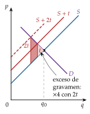
No toda fluctuación es mala: en los modelos de ciclo real, el ciclo es la respuesta óptima a perturbaciones reales, y una política que lo suavizara alejaría a la economía de su óptimo intertemporal [ver tema 3.A.42].↩︎
Con el margen \(1+\mu=P\cdot\mathrm{PMg}_L/W\), si la producción sube con los precios fijos, el salario real sube y el margen cae. Cuanto más rígidos los precios, más cae el margen cuando sube la demanda, más trabajo demandan las empresas y mayor es el multiplicador.↩︎
La primera pensión pública de vejez la creó la Alemania de Bismarck, junto con los seguros de enfermedad (1883) y de accidentes de trabajo (1884): la ley de 1889, en vigor desde 1891, daba una pensión a los 70 años, y el canciller buscaba con ella restar apoyo a los socialdemócratas. Su salida en 1890 se debió a su choque con Guillermo II, no a los seguros.↩︎
Peter Diamond recibió el Premio Nobel de Economía en 2010, con Dale Mortensen y Christopher Pissarides, «por su análisis de los mercados con fricciones de búsqueda».↩︎
Malinvaud (1953) y Cass (1972) caracterizan qué sendas de acumulación de capital son eficientes; la exposición de manual está en Acemoglu (2009, cap. 9).↩︎
Richard Thaler recibió el Premio Nobel de Economía en 2017 «por sus contribuciones a la economía conductual».↩︎
En la literatura se ha considerado productivo el gasto en seguridad, justicia, defensa, sanidad, transporte y comunicaciones, infraestructuras y las subvenciones a la I+D.↩︎
Robert Solow recibió el Premio Nobel de Economía en 1987 «por sus contribuciones a la teoría del crecimiento económico».↩︎
Con una Cobb-Douglas, la regla es además consistente en el tiempo: si los gobiernos futuros van a fijar ese mismo tipo, el impuesto de hoy no altera la inversión pasada ni los tipos esperados.↩︎
Trygve Haavelmo recibió el Premio Nobel de Economía en 1989 «por su clarificación de los fundamentos de la teoría de la probabilidad de la econometría y sus análisis de las estructuras económicas simultáneas».↩︎
Otras demostraciones y variantes del teorema, en «Balanced budget» (Wikipedia).↩︎
Si la demanda de dinero dependiera también del consumo público, una expansión fiscal apreciaría la moneda, en términos nominales y reales. El caso del texto equivale, entonces, a una expansión fiscal acomodada por la política monetaria.↩︎